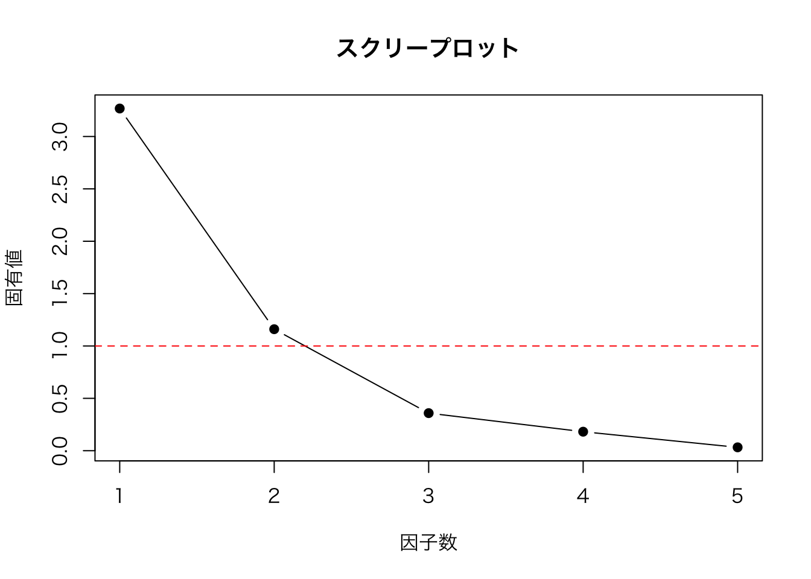
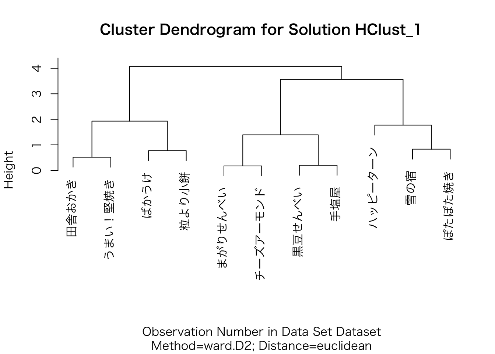
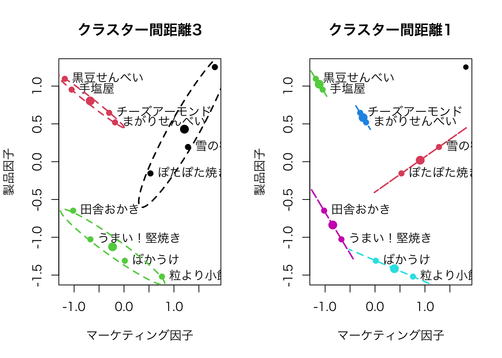
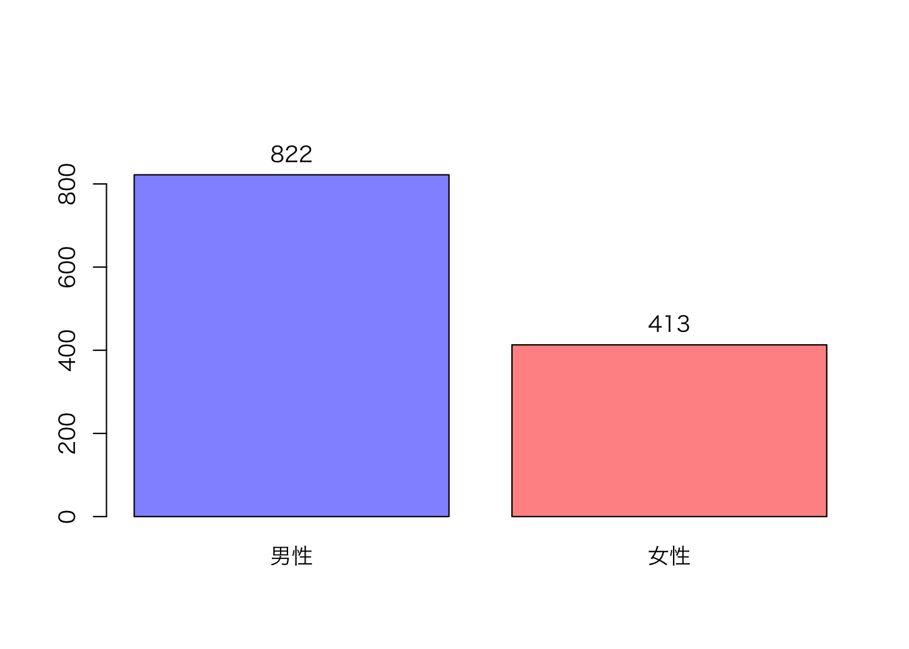
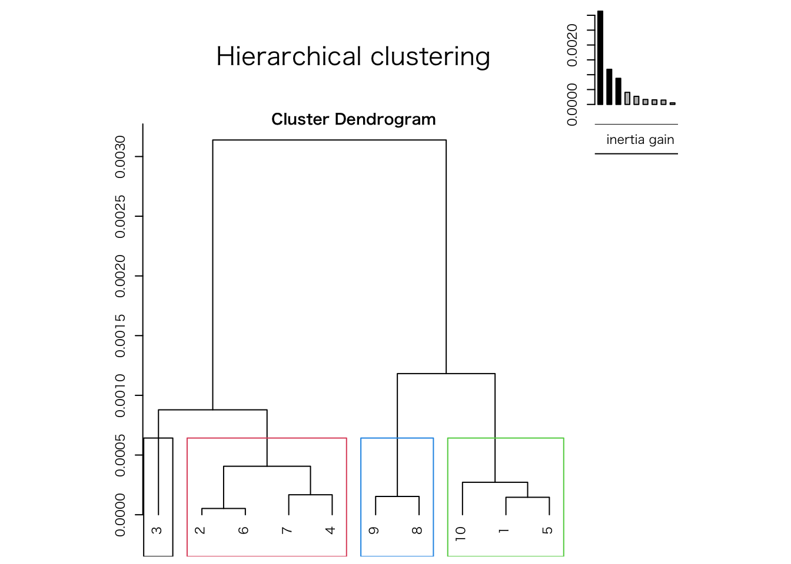
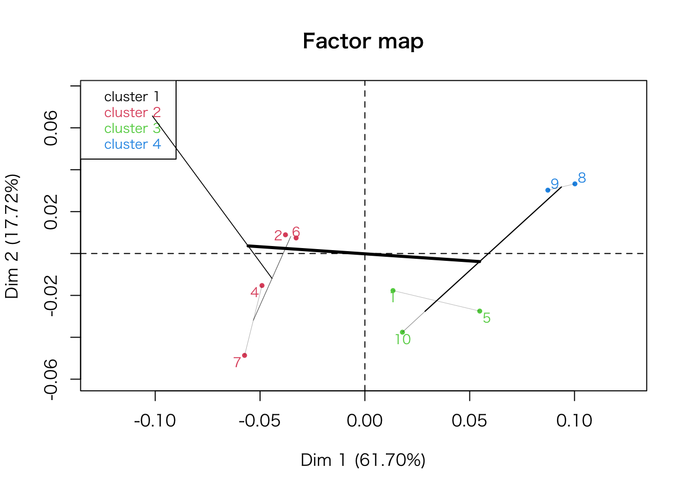

UniformSamples <- as.data.frame(matrix(runif(1*100, min=0, max=1), ncol=100))
rownames(UniformSamples) <- "sample"
colnames(UniformSamples) <- paste("obs", 1:100, sep="")照井伸彦・佐藤忠彦（2022）『現代マーケティング・リサーチ—市場を読み解くデータ分析 新版』有斐閣 は，Rを用いたマーケティング・リサーチの入門書として位置づけられる。
本書の想定読者は，Rを初めて使用する学生であり，プログラミングに戸惑うことが予想されるため，Rコマンダーを利用して解説している。 しかし，Rに慣れた読者にとっては，Rコマンダーの処理がブラックボックス化されており，かえって分かりにくい。 そこで，本サイトでは，Rコマンダーによって生成されたコードと，それと同じ処理をRに習熟したユーザーが記述する場合のコードを並べて示し，理解を助ける構成としている。
また，本書にはいくつか誤植があり，本書の指示通りに操作を進めると，Rコマンダーの利用において行き詰まる箇所がある。 そのような部分については適宜修正しながら読み進めることを推奨する。
第3章 サンプリング
4 単純無作為サンプリング
4.1 Rコマンダーによる乱数表作成
▶ Rコマンダーによって生成されたコード（p. 37）
▶ 手入力するコード（ransu.R）
x <- UniformSamples*100
rx <- round(x)+1
ux <- unique(rx)▶ 一般的なRコード
乱数を生成する際に，あらかじめ set.seed() を実行しておくと，同じ操作を繰り返したときに同じ乱数を再現できる。
set.seed(100)set.seed() のかっこ中の数字は何でもよい。
ux <- unique(ceiling(runif(100, min = 0, max = 100)))
ux[1:10] [1] 31 26 56 6 47 49 82 38 55 18または
ux <- sample(1:100, 100, replace = FALSE)
ux[1:10] [1] 82 53 3 5 44 85 28 52 25 42第5章 市場反応分析（I）
3 相関分析
3.2 売上と価格のデータ：散布図の作成
▶ Rコマンダーによって生成されたコード（p. 84）
Dataset <- read.table(file.choose(), header=TRUE, stringsAsFactors=TRUE, sep="", na.strings="NA",
dec=".", strip.white=TRUE)
scatterplot(売上~価格, regLine=FALSE, smooth=FALSE, boxplots=FALSE, data=Dataset)▶ 一般的なRコード
library(car)
Dataset <- read.table(file.choose(), header = TRUE, sep = "", strip.white = TRUE)
names(Dataset)[1] <- "売上数量"図5.2の縦軸が「売上数量」となっていたため，列名を変更した。 一般的に「売上」は売上高を指すため，価格と売上の相関関係を図示するのはやや不自然である（価格が上がれば，売上数量が一定の場合，売上高も上昇する）。 この点を踏まえると，本書では図が修正されたものの，本文の修正が反映されないまま出版された可能性があるのではないだろうか。 なお，p. 102の本文では「売上数量」と明確に同じ意味で使わる「売上」の記述が見られる。
Dataset 売上数量 価格 販促
1 2052 840 0
2 2105 820 0
3 2450 790 1
4 2131 780 0
5 2806 640 1
6 2532 710 0
7 3650 350 1
8 2968 560 0
9 2605 780 1
10 2652 640 0
11 3062 600 1
12 3237 510 1
13 2831 480 0scatterplot(売上数量 ~ 価格, regLine = FALSE, smooth = FALSE, boxplots = FALSE, las = 1, data = Dataset)
scatterplot() は car パッケージの関数であるため，最初に car パッケージをロードしている。
次のように汎用的な作図関数 plot() を使ってもよい。 この場合，car パッケージを読み込む必要はない。
plot(売上数量 ~ 価格, data = Dataset, las = 1)3.3 売上と価格に相関はあるか：標本相関係数の検定
▶ Rコマンダーによって生成されたコード（p. 87）
with(Dataset, cor.test(価格, 売上, alternative="two.sided", method="pearson"))▶ 一般的なRコード
cor.test(Dataset$価格, Dataset$売上数量, alternative = "two.sided", method = "pearson")
Pearson's product-moment correlation
data: Dataset$価格 and Dataset$売上数量
t = -8.1457, df = 11, p-value = 5.5e-06
alternative hypothesis: true correlation is not equal to 0
95 percent confidence interval:
-0.9780506 -0.7661642
sample estimates:
cor
-0.9261709 4 売上と価格の市場反応分析：回帰モデル
▶ Rコマンダーによって生成されたコード（p. 91）
RegModel.1 <- lm(売上~価格, data=Dataset)
summary(RegModel.1)▶ 一般的なRコード
RegModel_1 <- lm(売上数量 ~ 価格, data = Dataset)
summary(RegModel_1)
Call:
lm(formula = 売上数量 ~ 価格, data = Dataset)
Residuals:
Min 1Q Median 3Q Max
-368.25 -110.38 -0.84 124.15 269.81
Coefficients:
Estimate Std. Error t value Pr(>|t|)
(Intercept) 4581.7523 236.7640 19.352 7.61e-10 ***
価格 -2.8802 0.3536 -8.146 5.50e-06 ***
---
Signif. codes: 0 '***' 0.001 '**' 0.01 '*' 0.05 '.' 0.1 ' ' 1
Residual standard error: 184.1 on 11 degrees of freedom
Multiple R-squared: 0.8578, Adjusted R-squared: 0.8449
F-statistic: 66.35 on 1 and 11 DF, p-value: 5.5e-06昔は変数名（先頭ではなく途中）に . が使用されることもあったが，最近は使用しないのが一般的である。
4.1 価格反応係数推定値の精度と信頼区間
▶ Rコマンダーによって生成されたコード（p. 93）
Confint(RegModel.1, level=0.95)▶ 一般的なRコード
Confint(RegModel_1, level = 0.95) Estimate 2.5 % 97.5 %
(Intercept) 4581.752298 4060.638183 5102.866414
価格 -2.880209 -3.658452 -2.101967Confint() は car パッケージの関数である。
5 複数の説明変数を持つ市場反応分析：重回帰モデル
5.1 価格と販売促進の効果
▶ Rコマンダーによって生成されたコード（p. 98）
RegModel.2 <- lm(売上~価格+販促, data=Dataset)
summary(RegModel.2)▶ 一般的なRコード
RegModel_2 <- lm(売上数量 ~ 価格 + 販促, data = Dataset)
summary(RegModel_2)
Call:
lm(formula = 売上数量 ~ 価格 + 販促, data = Dataset)
Residuals:
Min 1Q Median 3Q Max
-182.876 -54.165 0.597 63.301 162.349
Coefficients:
Estimate Std. Error t value Pr(>|t|)
(Intercept) 4263.2262 148.6279 28.684 6.18e-11 ***
価格 -2.6028 0.2077 -12.531 1.94e-07 ***
販促 297.1607 60.1706 4.939 0.000588 ***
---
Signif. codes: 0 '***' 0.001 '**' 0.01 '*' 0.05 '.' 0.1 ' ' 1
Residual standard error: 104.1 on 10 degrees of freedom
Multiple R-squared: 0.9586, Adjusted R-squared: 0.9504
F-statistic: 115.9 on 2 and 10 DF, p-value: 1.209e-076 弾力性測定モデル
6.1 交差価格弾力性による競合関係の測定
▶ Rコマンダーによって生成されたコード（p. 105）
Dataset <- read.table(file.choose(), header=TRUE, stringsAsFactors=TRUE, sep="", na.strings="NA",
dec=".", strip.white=TRUE)
Dataset$LY1 <- with(Dataset, log(Y1))
Dataset$LX1 <- with(Dataset, log(X1))
Dataset$LX2 <- with(Dataset, log(X2))
RegModel.3 <- lm(LY1~LX1+LX2, data=Dataset)
summary(RegModel.3)▶ 一般的なRコード
Dataset <- read.table(file.choose(), header = TRUE, sep = "", strip.white = TRUE)
Dataset$LY1 <- log(Dataset$Y1)
Dataset$LX1 <- log(Dataset$X1)
Dataset$LX2 <- log(Dataset$X2)
RegModel_3 <- lm(LY1 ~ LX1 + LX2, data = Dataset)
summary(RegModel_3)
Call:
lm(formula = LY1 ~ LX1 + LX2, data = Dataset)
Residuals:
Min 1Q Median 3Q Max
-0.52555 -0.13583 -0.05818 0.18692 0.38784
Coefficients:
Estimate Std. Error t value Pr(>|t|)
(Intercept) 7.720 7.097 1.088 0.286
LX1 -7.033 1.290 -5.451 9.08e-06 ***
LX2 6.504 1.187 5.479 8.42e-06 ***
---
Signif. codes: 0 '***' 0.001 '**' 0.01 '*' 0.05 '.' 0.1 ' ' 1
Residual standard error: 0.2199 on 27 degrees of freedom
Multiple R-squared: 0.6221, Adjusted R-squared: 0.5941
F-statistic: 22.22 on 2 and 27 DF, p-value: 1.973e-06第6章 市場の発見と知覚マップ
4 知覚マップの作成
5 Rコマンダーでの手順
▶ Rコマンダーによって生成されたコード（p. 119）
Dataset <- read.table("clipboard", header=TRUE, stringsAsFactors=TRUE, sep="¥t", na.strings="NA",
dec=".", strip.white=TRUE)
local({
.FA <- factanal(~キャンペーンイベント+パッケージデザイン+広告宣伝+素材栄養素+味, factors=2, rotation="varimax", scores="regression", data=Dataset)
print(.FA)
Dataset <<- within(Dataset, {
F2 <- .FA$scores[,2]
F1 <- .FA$scores[,1]
})
})
scatterplot(F2~F1, regLine=FALSE, smooth=FALSE, id=list(method='identify'), boxplots=FALSE, xlab="マーケティング因子", ylab="製品因子", data=Dataset)▶ 一般的なRコード
library(car)
Dataset <- read.table("clipboard", header = TRUE, sep = "¥t")
FA <- factanal(
~ キャンペーンイベント + パッケージデザイン + 広告宣伝 + 素材栄養素 + 味,
factors = 2,
rotation = "varimax",
scores = "regression",
data = Dataset
)
print(FA)
Dataset$F1 <- FA$scores[, 1]
Dataset$F2 <- FA$scores[, 2]
rownames(Dataset) <- Dataset$製品名
scatterplot(
F2 ~ F1,
data = Dataset,
regLine = FALSE,
smooth = FALSE,
id = list(method = 'identify'),
boxplots = FALSE,
xlab = "マーケティング因子",
ylab = "製品因子"
)
Call:
factanal(x = ~キャンペーンイベント + パッケージデザイン + 広告宣伝 + 素材栄養素 + 味, factors = 2, data = Dataset, scores = "regression", rotation = "varimax", rownames = 1)
Uniquenesses:
キャンペーンイベント パッケージデザイン 広告宣伝
0.158 0.318 0.005
素材栄養素 味
0.407 0.005
Loadings:
Factor1 Factor2
キャンペーンイベント 0.886 0.237
パッケージデザイン 0.696 0.445
広告宣伝 0.985 0.158
素材栄養素 0.119 0.761
味 0.371 0.926
Factor1 Factor2
SS loadings 2.392 1.715
Proportion Var 0.478 0.343
Cumulative Var 0.478 0.821
Test of the hypothesis that 2 factors are sufficient.
The chi square statistic is 4.16 on 1 degree of freedom.
The p-value is 0.0415 1つの関数が長い場合は，引数のカンマの後で改行した方が見やすいため，コードを書く際に改行を入れるのが一般的である。 このとき，改行した行の先頭にはスペースを2つ入れる。
なお，クリップボードからデータを読むコードはOSによって異なる。 上に示したコードはWindowsの場合であり，macOSの場合，Dataset <- read.csv(pipe("pbpaste"), header = TRUE, sep = "\t") とする。 タブを表す記号 ¥t はWindowsの場合であり，macOSでは \t である。 ここで，read.table() の代わりに，read.delim() を使うこともできる。 read.delim() を使う場合は，引数の header と sep を省略できる（デフォルト値のため）。
また，Rコマンダーでは因子分析の結果を .FA に代入している。 . で始まる変数名はユーザーから隠す意図があり，この場面では意図通りに変数名を用いている（ただし，local() を使っているため，. で始まる必要はないのではあるが…）。 ここでは，ユーザーから隠す必然性はないため，.FA の代わりに FA という変数名を一般的なRコードで用いた。
さらに，本文の指示通りだと，図6.6の知覚マップには製品名ではなく，データフレーム Dataset の行番号が表示されることになる。 知覚マップ上に製品名を表示するには，rownames(Dataset) <- Dataset$製品名 を追加するか，あるいは，read.csv() の引数に row.names = 1 を指定する必要がある，
6 その他の問題
6.2 共通因子数の設定
▶ Rコマンダーによって生成されたコード（p. 84）
local({
.PC <- princomp(~キャンペーンイベント+パッケージデザイン+広告宣伝+素材栄養素+味, cor=TRUE, data=Dataset)
cat("\nComponent loadings:\n")
print(unclass(loadings(.PC)))
cat("\nComponent variances:\n")
print(.PC$sd^2)
cat("\n")
print(summary(.PC))
screeplot(.PC)
})▶ 一般的なRコード
PC <- princomp( ~ キャンペーンイベント + パッケージデザイン + 広告宣伝 + 素材栄養素 + 味, cor = TRUE, data = Dataset)
result <- list(
"Component Loadings" = unclass(loadings(PC)),
"Component Variances" = PC$sd ^ 2,
"Summary" = summary(PC)
)
result$`Component Loadings`
Comp.1 Comp.2 Comp.3 Comp.4 Comp.5
キャンペーンイベント 0.4714356 0.3769183 0.4597706 0.3613854 0.5419342
パッケージデザイン 0.4781955 0.1375293 -0.7804739 -0.2277185 0.3023567
広告宣伝 0.4871404 0.3588612 0.2664691 -0.4602804 -0.5924939
素材栄養素 0.3058296 -0.7333420 0.2987866 -0.4441059 0.2866606
味 0.4671617 -0.4152667 -0.1385361 0.6391062 -0.4262212
$`Component Variances`
Comp.1 Comp.2 Comp.3 Comp.4 Comp.5
3.2672933 1.1601639 0.3588058 0.1815096 0.0322274
$Summary
Importance of components:
Comp.1 Comp.2 Comp.3 Comp.4 Comp.5
Standard deviation 1.8075656 1.0771091 0.59900398 0.42603945 0.179519902
Proportion of Variance 0.6534587 0.2320328 0.07176115 0.03630192 0.006445479
Cumulative Proportion 0.6534587 0.8854914 0.95725260 0.99355452 1.000000000screeplot(PC)screeplot(PC, type = "lines")
スクリープロットを描く際，screeplot(PC) の引数として type = "lines" を指定すると折れ線グラフになり，こちらが一般的に用いられる。
また，主成分分析を使わずに相関行列の固有値を計算し，スクリープロットを描く方法もある。 因子分析の際にはこの方法が使われることがある。
cor_matrix <- cor(Dataset[, c("キャンペーンイベント", "パッケージデザイン", "広告宣伝", "素材栄養素", "味")])
ev <- eigen(cor_matrix)$values
plot(ev, type = "b", main = "スクリープロット", xlab = "因子数", ylab = "固有値", pch = 19)
abline(h = 1, col = "red", lty = 2)
さらに，psych パッケージには簡単にスクリープロットを描く関数が用意されている。
library(psych)
fa.parallel(cor_matrix, n.obs = nrow(Dataset), fa = "fa")Parallel analysis suggests that the number of factors = 2 and the number of components = NA fa.parallel() は，単なる固有値のプロットではなく，実データの固有値とランダムデータから計算された固有値を比較するものである。
7 サブマーケットと市場構造
▶ Rコマンダーによって生成されたコード（p. 84）
HClust.1 <- hclust(dist(model.matrix(~-1 + F1+F2, Dataset)) , method= "ward")
plot(HClust.1, main= "Cluster Dendrogram for Solution HClust.1", xlab= "Observation Number in Data Set Dataset", sub="Method=ward; Distance=euclidian")▶ 一般的なRコード
dist_1 <- dist(Dataset[, c("F1", "F2")], method = "euclidean")
HClust_1 <- hclust(dist_1, method = "ward.D2")
plot(
HClust_1,
main = "Cluster Dendrogram for Solution HClust_1",
xlab = "Observation Number in Data Set Dataset",
sub = "Method=ward.D2; Distance=euclidean"
)
ウォード法は ward や ward.D ではなく，ward.D2 を指定する。 詳細な説明は関数 hclust() のヘルプを参照のこと。
なお，知覚マップのところで rownames(Dataset) <- Dataset$製品名 を追加した場合は，図6.9とは異なり，デンドログラムに製品名が表示される。 製品名ではなく番号を使ってデンドログラムを描くには，次のコードを実行する。
rownames(Dataset) <- 1:nrow(Dataset)
dist_1 <- dist(Dataset[, c("F1", "F2")], method = "euclidean")
HClust_1 <- hclust(dist_1, method = "ward.D2")
plot(
HClust_1,
main = "Cluster Dendrogram for Solution HClust_1",
xlab = "Observation Number in Data Set Dataset",
sub = "Method=ward.D2; Distance=euclidean"
)
以下は，図6.10の作図のためのコードである。 なお，クラスター分析に ward.D2 を使用しているため，クラスター間距離が本書の記述とは異なる。
Dataset$Cluster <- as.factor(cutree(HClust_1, h = 3))
par(mfrow = c(1, 2))
plot(
Dataset$F1, Dataset$F2,
col = as.numeric(Dataset$Cluster),
pch = 16,
xlab = "マーケティング因子", ylab = "製品因子",
main = "クラスター間距離3"
)
text(Dataset$F1, Dataset$F2, labels = Dataset$製品名, pos = 4, cex = 1)
for (k in unique(Dataset$Cluster)) {
dataEllipse(
Dataset$F1[Dataset$Cluster == k],
Dataset$F2[Dataset$Cluster == k],
add = TRUE, col = k, lty = 2,
levels = 0.5)
}
Dataset$Cluster <- as.factor(cutree(HClust_1, h = 1))
plot(
Dataset$F1, Dataset$F2,
col = as.numeric(Dataset$Cluster),
pch = 16,
xlab = "マーケティング因子", ylab = "製品因子",
main = "クラスター間距離1"
)
text(Dataset$F1, Dataset$F2, labels = Dataset$製品名, pos = 4, cex = 1)
for (k in unique(Dataset$Cluster)) {
cluster_data <- Dataset[Dataset$Cluster == k, c("F1", "F2")]
if (nrow(cluster_data) > 1) {
dataEllipse(
cluster_data$F1,
cluster_data$F2,
add = TRUE, col = k, lty = 2,
levels = 0.5)
}
}
dataEllipse() はデータのばらつきをもとに楕円を描くため，2点しかないと警告が出て，直線が描かれる点に注意が必要である。
図を横に並べて表示する設定を行ったため，次のコードを実行してデフォルトの設定に戻しておく。
par(mfrow = c(1, 1))第7章 市場セグメンテーション
5 Rコマンダーによる市場セグメンテーション
5.2 因子分析
▶ Rコマンダーによって生成されたコード（p. 149）
Dataset <- read.table(file.choose(), header=TRUE, stringsAsFactors=TRUE, sep=",", na.strings="NA",
dec=".", strip.white=TRUE)
local({
.FA <- factanal(~q1+q2+q3+q4+q5+q6+q7+q8+q9+q10+q11+q12+q13+q14+q15+q16+q17+q18+q19+q20+q21+q22+q23+q24+q25+q26+q27, factors=4,
rotation="varimax", scores="regression", data=Dataset)
print(.FA)
Dataset <<- within(Dataset, {
F4 <- .FA$scores[,4]
F3 <- .FA$scores[,3]
F2 <- .FA$scores[,2]
F1 <- .FA$scores[,1]
})
})▶ 手入力するコード
remove(.FA)
.FA <- factanal(~q1+q2+q3+q4+q5+q6+q7+q8+q9+q10+q11+q12+q13+q14+q15+q16+q17+q18+q19+q20+q21+q22+q23+q24+q25+q26+q27, factors=4, rotation="varimax", scores="regression", data=Dataset)
.FA
Dataset$FA1 <- .FA$scores[,1]
Dataset$FA2 <- .FA$scores[,2]
Dataset$FA3 <- .FA$scores[,3]
Dataset$FA4 <- .FA$scores[,4]
print(.FA,cutoff=0,sort=TRUE)▶ 一般的なRコード
Dataset <- read.csv(file.choose())
FA <- factanal(
~ q1 + q2 + q3 + q4 + q5 + q6 + q7 + q8 + q9 + q10 + q11 + q12 + q13 + q14 + q15 + q16 + q17 + q18 + q19 + q20 + q21 + q22 + q23 + q24 + q25 + q26 + q27,
factors = 4,
rotation = "varimax",
scores = "regression",
data = Dataset
)
print(FA)
Call:
factanal(x = ~q1 + q2 + q3 + q4 + q5 + q6 + q7 + q8 + q9 + q10 + q11 + q12 + q13 + q14 + q15 + q16 + q17 + q18 + q19 + q20 + q21 + q22 + q23 + q24 + q25 + q26 + q27, factors = 4, data = Dataset, scores = "regression", rotation = "varimax")
Uniquenesses:
q1 q2 q3 q4 q5 q6 q7 q8 q9 q10 q11 q12 q13
0.857 0.924 0.557 0.743 0.532 0.759 0.654 0.755 0.645 0.705 0.676 0.318 0.179
q14 q15 q16 q17 q18 q19 q20 q21 q22 q23 q24 q25 q26
0.220 0.160 0.550 0.143 0.053 0.262 0.657 0.864 0.492 0.443 0.516 0.398 0.106
q27
0.163
Loadings:
Factor1 Factor2 Factor3 Factor4
q1 0.251 0.261
q2 0.257
q3 0.184 0.638
q4 0.138 0.471
q5 0.164 0.659
q6 0.105 0.459 0.119
q7 0.110 0.238 0.522
q8 0.281 0.177 0.299 0.212
q9 0.234 0.234 0.481 0.118
q10 0.355 0.165 0.208 0.314
q11 0.408 0.135 0.127 0.351
q12 0.805 0.156
q13 0.898
q14 0.869 0.100
q15 0.901 0.146
q16 0.541 0.264 0.284
q17 0.496 0.121 0.768
q18 0.478 0.839
q19 0.803 0.286
q20 0.360 0.248 0.332 0.204
q21 0.329 0.109 0.101
q22 0.474 0.531
q23 0.550 0.500
q24 0.107 0.555 0.405
q25 0.693 0.331
q26 0.131 0.911 0.177 0.121
q27 0.148 0.880 0.175
Factor1 Factor2 Factor3 Factor4
SS loadings 5.206 3.376 3.187 1.899
Proportion Var 0.193 0.125 0.118 0.070
Cumulative Var 0.193 0.318 0.436 0.506
Test of the hypothesis that 4 factors are sufficient.
The chi square statistic is 2835.86 on 249 degrees of freedom.
The p-value is 0 Dataset$F1 <- FA$scores[, 1]
Dataset$F2 <- FA$scores[, 2]
Dataset$F3 <- FA$scores[, 3]
Dataset$F4 <- FA$scores[, 4]
print(FA, cutoff = 0, sort = TRUE)
Call:
factanal(x = ~q1 + q2 + q3 + q4 + q5 + q6 + q7 + q8 + q9 + q10 + q11 + q12 + q13 + q14 + q15 + q16 + q17 + q18 + q19 + q20 + q21 + q22 + q23 + q24 + q25 + q26 + q27, factors = 4, data = Dataset, scores = "regression", rotation = "varimax")
Uniquenesses:
q1 q2 q3 q4 q5 q6 q7 q8 q9 q10 q11 q12 q13
0.857 0.924 0.557 0.743 0.532 0.759 0.654 0.755 0.645 0.705 0.676 0.318 0.179
q14 q15 q16 q17 q18 q19 q20 q21 q22 q23 q24 q25 q26
0.220 0.160 0.550 0.143 0.053 0.262 0.657 0.864 0.492 0.443 0.516 0.398 0.106
q27
0.163
Loadings:
Factor1 Factor2 Factor3 Factor4
q12 0.805 0.045 0.156 0.090
q13 0.898 0.041 0.078 0.089
q14 0.869 0.086 0.100 0.080
q15 0.901 0.068 0.045 0.146
q16 0.541 0.083 0.264 0.284
q19 0.803 0.066 0.085 0.286
q23 0.065 0.550 0.500 0.020
q24 0.107 0.555 0.405 0.025
q25 0.081 0.693 0.331 0.071
q26 0.131 0.911 0.177 0.121
q27 0.148 0.880 0.175 0.099
q3 0.010 0.184 0.638 -0.040
q5 0.039 0.164 0.659 0.070
q7 0.110 0.238 0.522 0.067
q22 0.011 0.474 0.531 0.026
q17 0.496 0.076 0.121 0.768
q18 0.478 0.075 0.096 0.839
q1 0.096 0.251 0.261 0.050
q2 0.100 0.006 0.257 0.017
q4 0.095 0.138 0.471 0.084
q6 0.070 0.105 0.459 0.119
q8 0.281 0.177 0.299 0.212
q9 0.234 0.234 0.481 0.118
q10 0.355 0.165 0.208 0.314
q11 0.408 0.135 0.127 0.351
q20 0.360 0.248 0.332 0.204
q21 0.329 0.109 0.074 0.101
Factor1 Factor2 Factor3 Factor4
SS loadings 5.206 3.376 3.187 1.899
Proportion Var 0.193 0.125 0.118 0.070
Cumulative Var 0.193 0.318 0.436 0.506
Test of the hypothesis that 4 factors are sufficient.
The chi square statistic is 2835.86 on 249 degrees of freedom.
The p-value is 0 5.3 クラスター分析
▶ Rコマンダーによって生成されたコード（p. 153）
.cluster <- KMeans(model.matrix(~-1 + F1 + F2 + F3 + F4, Dataset), centers = 4, iter.max = 10, num.seeds = 10)
.cluster$size # Cluster Sizes
.cluster$centers # Cluster Centroids
.cluster$withinss # Within Cluster Sum of Squares
.cluster$tot.withinss # Total Within Sum of Squares
.cluster$betweenss # Between Cluster Sum of Squares
biplot(princomp(model.matrix(~-1 + F1 + F2 + F3 + F4, Dataset)), xlabs = as.character(.cluster$cluster))
Dataset$KMeans <- assignCluster(model.matrix(~-1 + F1 + F2 + F3 + F4, Dataset), Dataset, .cluster$cluster)
remove(.cluster)
local({
.Table <- with(Dataset, table(KMeans))
cat("\ncounts:\n")
print(.Table)
cat("\npercentages:\n")
print(round(100*.Table/sum(.Table), 2))
})
library(abind, pos=16)
library(e1071, pos=17)
numSummary(Dataset[,c("F1", "F2", "F3", "F4"), drop=FALSE], groups=Dataset$KMeans, statistics=c("mean"), quantiles=c(0,.25,.5,.75,1))▶ 一般的なRコード
set.seed(10)
cluster <- kmeans(Dataset[, c("F1", "F2", "F3", "F4")], centers = 4, iter.max = 10, nstart = 10)
result <- list(
"Cluster Sizes" = cluster$size,
"Cluster Centroids" = cluster$centers,
"Within Cluster Sum of Squares" = cluster$withinss,
"Total Within Sum of Squares" = cluster$tot.withinss,
"Between Cluster Sum of Squares" = cluster$betweenss
)
result$`Cluster Sizes`
[1] 192 202 514 327
$`Cluster Centroids`
F1 F2 F3 F4
1 -0.5953486 0.21550094 0.2528594 1.4000022
2 -0.6171745 -1.40308357 -0.4617852 -0.5133626
3 0.8355935 0.01429324 0.0165523 0.1887794
4 -0.5826265 0.71773692 0.1107759 -0.8016323
$`Within Cluster Sum of Squares`
[1] 453.0426 647.8556 677.8658 696.1054
$`Total Within Sum of Squares`
[1] 2474.869
$`Between Cluster Sum of Squares`
[1] 1907.535主成分分析のバイプロットを描画し，データポイントを K-means 法によるクラスター分析の結果に基づいてラベル付けする。
biplot(princomp(Dataset[, c("F1", "F2", "F3", "F4")]), xlabs = as.character(cluster$cluster))K-means 法によるクラスター分析の結果を確認する。
Dataset$KMeans <- cluster$cluster
table(Dataset$KMeans)
1 2 3 4
192 202 514 327 round(prop.table(table(Dataset$KMeans)) * 100, 2)
1 2 3 4
15.55 16.36 41.62 26.48 split_data <- split(Dataset[, c("F1", "F2", "F3", "F4")], Dataset$KMeans)
result <- data.frame(セグメント = names(split_data),
t(sapply(split_data, colMeans)),
サンプルサイズ = sapply(split_data, nrow))
result セグメント F1 F2 F3 F4 サンプルサイズ
1 1 -0.5953486 0.21550094 0.2528594 1.4000022 192
2 2 -0.6171745 -1.40308357 -0.4617852 -0.5133626 202
3 3 0.8355935 0.01429324 0.0165523 0.1887794 514
4 4 -0.5826265 0.71773692 0.1107759 -0.8016323 327result の出力結果において，行の並び順が表7.9と異なっていても問題ない。
5.4 セグメントのプロファイリング
表7.10〜表7.13もRを使って作成できる。
split_data <- split(Dataset, Dataset$KMeans)
gender <- round(prop.table(sapply(split_data, function(df) table(df$性別)), margin = 2) * 100, 1)
gender_table <- data.frame(セグメント = names(split_data), t(gender))
names(gender_table)[-1] <- c("男性", "女性")
gender_table セグメント 男性 女性
1 1 60.4 39.6
2 2 69.3 30.7
3 3 65.4 34.6
4 4 70.3 29.7data.frame(セグメント = names(split_data),
平均年齢 = sapply(split_data, function(df) round(mean(df$年齢), 1))) セグメント 平均年齢
1 1 44.0
2 2 39.9
3 3 42.1
4 4 45.5data.frame(セグメント = names(split_data),
投資経験年数 = sapply(split_data, function(df) round(mean(df$投資経験年数), 1))) セグメント 投資経験年数
1 1 8.3
2 2 6.3
3 3 7.3
4 4 9.2transaction <- round(prop.table(sapply(split_data, function(df) table(df$取引形態)), margin = 2) * 100, 1)
transaction_table <- data.frame(セグメント = names(split_data), t(transaction))
names(transaction_table)[-1] <- c("対面取引", "インターネット取引", "対面とインターネットの併用")
transaction_table セグメント 対面取引 インターネット取引 対面とインターネットの併用
1 1 20.3 64.1 15.6
2 2 14.9 78.2 6.9
3 3 15.8 72.0 12.3
4 4 13.1 74.9 11.9さらに，図7.4もRを使って作成できる。
gender_counts <- table(Dataset$性別)
names(gender_counts) <- c("男性", "女性")
barplot(gender_counts)Dataset$年齢区分 <- cut(Dataset$年齢,
breaks = seq(20, max(Dataset$年齢) + 5, by = 5),
right = FALSE)
barplot(table(Dataset$年齢区分), col = "skyblue", las = 2)細かい調整が必要な場合は，自分でカスタマイズ可能である。 例えば，棒グラフの上に数値を表示したい場合は，次のようにする。
bar_positions <- barplot(gender_counts, ylim = c(0, max(gender_counts) * 1.2), col = adjustcolor(c("blue", "red"), alpha.f = .5))
text(bar_positions, gender_counts, labels = gender_counts, pos = 3, cex = 1, col = "black")
第8章 製品開発
4 コンジョイント分析
4.2 個人分析：Rコマンダーによる分析
▶ Rコマンダーによって生成されたコード（p. 172）
Dataset <- read.table(file.choose(), header=TRUE, stringsAsFactors=TRUE, sep="", na.strings="NA",
dec=".", strip.white=TRUE)
RegModel.1 <- lm(全体効用~X2年+X4時間+X6時間+シルバー+赤, data=Dataset)
summary(RegModel.1)▶ 一般的なRコード
Dataset <- read.table(file.choose(), header = TRUE, sep = "")
RegModel_1 <- lm(全体効用 ~ X2年 + X4時間 + X6時間 + シルバー + 赤, data = Dataset)
summary(RegModel_1)
Call:
lm(formula = 全体効用 ~ X2年 + X4時間 + X6時間 + シルバー +
赤, data = Dataset)
Residuals:
Min 1Q Median 3Q Max
-3.0556 -0.8889 0.4167 1.0278 2.4444
Coefficients:
Estimate Std. Error t value Pr(>|t|)
(Intercept) -0.5556 1.0199 -0.545 0.59591
X2年 6.7778 0.8327 8.139 3.15e-06 ***
X4時間 2.5000 1.0199 2.451 0.03052 *
X6時間 3.5000 1.0199 3.432 0.00497 **
シルバー 6.3333 1.0199 6.210 4.52e-05 ***
赤 7.6667 1.0199 7.517 7.07e-06 ***
---
Signif. codes: 0 '***' 0.001 '**' 0.01 '*' 0.05 '.' 0.1 ' ' 1
Residual standard error: 1.766 on 12 degrees of freedom
Multiple R-squared: 0.9227, Adjusted R-squared: 0.8905
F-statistic: 28.65 on 5 and 12 DF, p-value: 2.819e-06conjoint1.txt はタブ区切りテキストのように見えるが，Rコマンダーで「フィールドの区切り記号」を「タブ」にするとエラーが出て読み込めない。 「空白」にすると読み込める。 よく見ると，conjoint1.txt のヘッダーのみスペース区切りになっている。 このようなデータは珍しい。
なお，数字で始まる列名の先頭に X を付けたくない場合は，read.table() の引数に check.names = FALSE を指定すればよい。
Dataset <- read.table(file.choose(), header = TRUE, sep = "", check.names = FALSE)
Dataset カードNo. 6時間 4時間 2年 赤 シルバー 選好順位 全体効用
1 1 1 0 0 1 0 7 12
2 2 1 0 0 0 1 9 10
3 3 1 0 0 0 0 17 2
4 4 1 0 1 1 0 1 18
5 5 1 0 1 0 1 6 13
6 6 1 0 1 0 0 8 11
7 7 0 1 0 1 0 10 9
8 8 0 1 0 0 1 12 7
9 9 0 1 0 0 0 16 3
10 10 0 1 1 1 0 2 17
11 11 0 1 1 0 1 3 16
12 12 0 1 1 0 0 11 8
13 13 0 0 0 1 0 14 5
14 14 0 0 0 0 1 13 6
15 15 0 0 0 0 0 18 1
16 16 0 0 1 1 0 5 14
17 17 0 0 1 0 1 4 15
18 18 0 0 1 0 0 15 4ただし，lm() を実行するときには，列名をバッククオート ` で括る必要がある。
RegModel_1 <- lm(全体効用 ~ `2年` + `4時間` + `6時間` + シルバー + 赤, data = Dataset)
summary(RegModel_1)
Call:
lm(formula = 全体効用 ~ `2年` + `4時間` + `6時間` +
シルバー + 赤, data = Dataset)
Residuals:
Min 1Q Median 3Q Max
-3.0556 -0.8889 0.4167 1.0278 2.4444
Coefficients:
Estimate Std. Error t value Pr(>|t|)
(Intercept) -0.5556 1.0199 -0.545 0.59591
`2年` 6.7778 0.8327 8.139 3.15e-06 ***
`4時間` 2.5000 1.0199 2.451 0.03052 *
`6時間` 3.5000 1.0199 3.432 0.00497 **
シルバー 6.3333 1.0199 6.210 4.52e-05 ***
赤 7.6667 1.0199 7.517 7.07e-06 ***
---
Signif. codes: 0 '***' 0.001 '**' 0.01 '*' 0.05 '.' 0.1 ' ' 1
Residual standard error: 1.766 on 12 degrees of freedom
Multiple R-squared: 0.9227, Adjusted R-squared: 0.8905
F-statistic: 28.65 on 5 and 12 DF, p-value: 2.819e-06実際に自分でデータを扱う際には，こうしたことを考慮しながら，列名をどうするかを決める必要がある。
5 直交表利用によるコンジョイント分析
5.3 集計分析：Rコマンダーによる分析
▶ Rコマンダーによって生成されたコード（p. 179）
Dataset <- read.table(file.choose(), header=TRUE, stringsAsFactors=TRUE, sep="", na.strings="NA",
dec=".", strip.white=TRUE)
RegModel.2 <- lm(全体効用~X2年+X4時間+X6時間+シルバー+赤, data=Dataset)
summary(RegModel.2)▶ 一般的なRコード
Dataset <- read.table(file.choose(), header = TRUE, sep = "")
RegModel_2 <- lm(全体効用 ~ X2年 + X4時間 + X6時間 + シルバー + 赤, data = Dataset)
summary(RegModel_2)
Call:
lm(formula = 全体効用 ~ X2年 + X4時間 + X6時間 + シルバー +
赤, data = Dataset)
Residuals:
Min 1Q Median 3Q Max
-2.7667 -0.6875 -0.1500 0.5833 2.7000
Coefficients:
Estimate Std. Error t value Pr(>|t|)
(Intercept) 0.1667 0.3193 0.522 0.603020
X2年 2.2500 0.2560 8.790 1.57e-13 ***
X4時間 1.1333 0.2956 3.834 0.000243 ***
X6時間 0.3667 0.2956 1.240 0.218245
シルバー 3.9000 0.2956 13.194 < 2e-16 ***
赤 4.6000 0.2956 15.563 < 2e-16 ***
---
Signif. codes: 0 '***' 0.001 '**' 0.01 '*' 0.05 '.' 0.1 ' ' 1
Residual standard error: 1.145 on 84 degrees of freedom
Multiple R-squared: 0.8165, Adjusted R-squared: 0.8056
F-statistic: 74.77 on 5 and 84 DF, p-value: < 2.2e-16conjoint2.txt も conjoint1.txt と同様に変わったルール（ヘッダーのみスペース区切りで，他はタブ区切り）でデータが記述されている。
第9章 新製品の普及
6 Rコマンダーによる新製品普及構造の分析
6.1 回帰分析
▶ Rコマンダーによって生成されたコード（p. 199）
Dataset <- read.table(file.choose(), header=TRUE, stringsAsFactors=TRUE, sep=",", na.strings="NA",
dec=".", strip.white=TRUE)
Dataset2 <- subset(Dataset, subset=時点<11)
RegModel.1 <- lm(購買者数~一期前累積購買者数+一期前累積購買者数の二乗, data=Dataset2)
summary(RegModel.1)▶ 手入力するコード
a <- 5.000e+03
b <- 9.983e-02
c <- -3.994e-06
m <- (- b - sqrt(b ^ 2 - 4 * a * c)) / (2 * c)
p <- a / m
q <- p + b
m[1] 50021.69p[1] 0.09995664q[1] 0.1997866本書の指示通りに計算すると，p と q は小数第4位で四捨五入すれば正しい値が計算できたことになる。 ただし，m については四捨五入したとしても値が一致しない。
▶ 一般的なRコード
Dataset <- read.csv(file.choose(), header = TRUE)
Dataset2 <- Dataset[Dataset$時点 < 11, ]
RegModel_1 <- lm(購買者数 ~ 一期前累積購買者数 + I(一期前累積購買者数 ^ 2), data = Dataset2)
summary(RegModel_1)
Call:
lm(formula = 購買者数 ~ 一期前累積購買者数 + I(一期前累積購買者数^2),
data = Dataset2)
Residuals:
Min 1Q Median 3Q Max
-4.8250 -1.4318 -0.3015 1.5493 5.1581
Coefficients:
Estimate Std. Error t value Pr(>|t|)
(Intercept) 5.000e+03 2.453e+00 2038.4 < 2e-16 ***
一期前累積購買者数 9.983e-02 2.708e-04 368.7 2.85e-16 ***
I(一期前累積購買者数^2) -3.994e-06 6.104e-09 -654.3 < 2e-16 ***
---
Signif. codes: 0 '***' 0.001 '**' 0.01 '*' 0.05 '.' 0.1 ' ' 1
Residual standard error: 3.051 on 7 degrees of freedom
Multiple R-squared: 1, Adjusted R-squared: 1
F-statistic: 7.471e+05 on 2 and 7 DF, p-value: < 2.2e-16このデータについて，「累積購買者数」，「一期前累積購買者数」，「一期前累積購買者数の二乗」の3つの列がどこで計算されたのかが気になる。 通常は，次のデータが手元にあると考えるのが理に適っているだろう。
Dataset <- Dataset[, 1:2]
Dataset 時点 購買者数
1 1 4998
2 2 5398
3 3 5611
4 4 5574
5 5 5292
6 6 4798
7 7 4157
8 8 3445
9 9 2762
10 10 2141
11 11 1609
12 12 1199
13 13 871
14 14 629
15 15 448このデータから，必要なデータを作成可能である。
Dataset$累積購買者数 <- cumsum(Dataset$購買者数)
Dataset$一期前累積購買者数 <- c(0, head(Dataset$累積購買者数, -1))
Dataset$一期前累積購買者数の二乗 <- Dataset$一期前累積購買者数 ^ 2
Dataset 時点 購買者数 累積購買者数 一期前累積購買者数 一期前累積購買者数の二乗
1 1 4998 4998 0 0
2 2 5398 10396 4998 24980004
3 3 5611 16007 10396 108076816
4 4 5574 21581 16007 256224049
5 5 5292 26873 21581 465739561
6 6 4798 31671 26873 722158129
7 7 4157 35828 31671 1003052241
8 8 3445 39273 35828 1283645584
9 9 2762 42035 39273 1542368529
10 10 2141 44176 42035 1766941225
11 11 1609 45785 44176 1951518976
12 12 1199 46984 45785 2096266225
13 13 871 47855 46984 2207496256
14 14 629 48484 47855 2290101025
15 15 448 48932 48484 2350698256続いて，m，p，q の計算は，lm() の結果を用いて計算することができる。
x <- coef(RegModel_1)
names(x) <- NULL
a <- x[1]
b <- x[2]
c <- x[3]
m <- (- b - sqrt(b ^ 2 - 4 * a * c)) / (2 * c)
p <- a / m
q <- p + b
m[1] 50022.8p[1] 0.09994712q[1] 0.1997775今度は，本書と同じ値が計算された。 続いて，図9.12を作成する。
▶ Rコマンダーによって生成されたコード（p. 203）
Dataset$予測 <- with(Dataset, 5.000e+03+一期前累積購買者数*9.983e-02+一期前累積購買者数の二乗*(-3.994e-06))
with(Dataset, lineplot(時点, 購買者数, 予測))▶ 一般的なRコード
Dataset$予測 <- as.matrix(cbind(1, Dataset[, c("一期前累積購買者数", "一期前累積購買者数の二乗")])) %*% coef(RegModel_1)このとき， predict() 関数を使うと便利である。
Dataset$予測 <- predict(RegModel_1, newdata = Dataset)Rコマンダーでは，RcmdrMisc パッケージの関数 lineplot() で作図しているので，Rコマンダーを使わない場合はこの関数は使えない。 代わりに，次のコードで図を作成できる。
plot(Dataset$時点, Dataset$購買者数, type = "l", col = "black", lwd = 2,
ylim = range(c(Dataset$購買者数, Dataset$予測)),
xlab = "時点", ylab = "", main = "購買者数と予測値の推移")
lines(Dataset$時点, Dataset$予測, col = "red", lwd = 2, lty = 2)
text(Dataset$時点, Dataset$購買者数, labels = "1", pos = 3, offset = -.5, col = "black")
text(Dataset$時点, Dataset$予測, labels = "2", pos = 3, offset = -.5, col = "red")
legend("topright", legend = c("購買者数", "予測"), col = c("black", "red"), lty = c(1, 2), lwd = 2)図9.13にあるような累積購入者数のグラフを作成するには，次のコードを実行する。
plot(累積購買者数 ~ 時点, data = Dataset, type = "l", col = "black", lwd = 2, las = 1, ylim = c(0, max(Dataset$累積購買者数)), main = "普及パターン")
第10章 顧客の管理
4 Rコマンダーによる顧客管理のための分析
4.1 RFM分析
▶ Rコマンダーによって生成されたコード（p. 220）
Dataset <- read.table(file.choose(), header=TRUE, stringsAsFactors=TRUE, sep=",", na.strings="NA",
dec=".", strip.white=TRUE)
Dataset <- within(Dataset, {
M_Rank <- Recode(M, '0:49999="M_Rank1"; 50000:99999="M_Rank2"; 100000:299999="M_Rank3"; 300000:499999="M_Rank4"; else="M_Rank5"',
as.factor=TRUE, to.value="=", interval=":", separator=";")
})
Dataset <- within(Dataset, {
F_Rank <- Recode(F, '1="F_Rank1"; 2="F_Rank2"; 3:9="F_Rank3"; 10:29="F_Rank4"; else="F_Rank5";', as.factor=TRUE, to.value="=",
interval=":", separator=";")
})
Dataset <- within(Dataset, {
R_Rank <- Recode(R, '0:30="R_Rank5"; 31:60="R_Rank4"; 61:90="R_Rank3"; 91:180="R_Rank2"; else="R_Rank1"; ;', as.factor=TRUE,
to.value="=", interval=":", separator=";")
})
Boxplot(M ~ R_Rank, data=Dataset, id=list(method="y"))
Boxplot(F ~ R_Rank, data=Dataset, id=list(method="y"))
library(mvtnorm, pos=16)
library(survival, pos=16)
library(MASS, pos=16)
library(TH.data, pos=16)
library(multcomp, pos=16)
library(abind, pos=21)
AnovaModel.2 <- aov(M ~ R_Rank, data=Dataset)
summary(AnovaModel.2)
with(Dataset, numSummary(M, groups=R_Rank, statistics=c("mean", "sd")))
local({
.Pairs <- glht(AnovaModel.2, linfct = mcp(R_Rank = "Tukey"))
print(summary(.Pairs)) # pairwise tests
print(confint(.Pairs, level=0.95)) # confidence intervals
print(cld(.Pairs, level=0.05)) # compact letter display
old.oma <- par(oma=c(0, 5, 0, 0))
plot(confint(.Pairs))
par(old.oma)
})▶ 一般的なRコード
Dataset <- read.csv(file.choose(), header = TRUE)
Dataset$M_Rank <- cut(
Dataset$M,
breaks = c(-Inf, 49999, 99999, 299999, 499999, Inf),
labels = paste0("M_Rank", 1:5),
right = TRUE
)
Dataset$F_Rank <- cut(
Dataset$F,
breaks = c(-Inf, 1, 2, 9, 29, Inf),
labels = paste0("F_Rank", 1:5),
right = TRUE
)
Dataset$R_Rank <- cut(
Dataset$R,
breaks = c(-Inf, 30, 60, 90, 180, Inf),
labels = paste0("R_Rank", 5:1),
right = TRUE
)
Dataset$R_Rank <- factor(Dataset$R_Rank, levels = rev(levels(Dataset$R_Rank)))Boxplot() は car パッケージの関数である。 car パッケージを使わなくても，boxplot() で同じ図が作成できる。
boxplot(M ~ R_Rank, data = Dataset, col = "gray")
boxplot(F ~ R_Rank, data = Dataset, col = "gray")
AnovaModel_2 <- aov(M ~ R_Rank, data = Dataset)
summary(AnovaModel_2) Df Sum Sq Mean Sq F value Pr(>F)
R_Rank 4 2.054e+12 5.134e+11 20.78 <2e-16 ***
Residuals 1995 4.929e+13 2.471e+10
---
Signif. codes: 0 '***' 0.001 '**' 0.01 '*' 0.05 '.' 0.1 ' ' 1Rコマンダーでは，RcmdrMisc パッケージの関数 lineplot() でTukeyのHSD検定を行っているので，Rコマンダーを使わない場合はこの関数は使えない。 代わりに，次のコードで同様の結果が得られる。
mean <- tapply(Dataset$M, Dataset$R_Rank, mean)
sd <- tapply(Dataset$M, Dataset$R_Rank, sd)
data.frame(R_Rank = names(mean), mean = mean, sd = sd) R_Rank mean sd
R_Rank1 R_Rank1 209930.0 151138.6
R_Rank2 R_Rank2 225057.9 152059.6
R_Rank3 R_Rank3 247259.6 152568.9
R_Rank4 R_Rank4 281963.5 156606.0
R_Rank5 R_Rank5 306564.1 161327.1Tukey_Result <- TukeyHSD(AnovaModel_2, "R_Rank")
Tukey_Result Tukey multiple comparisons of means
95% family-wise confidence level
Fit: aov(formula = M ~ R_Rank, data = Dataset)
$R_Rank
diff lwr upr p adj
R_Rank2-R_Rank1 15127.90 -42195.595 72451.39 0.9518249
R_Rank3-R_Rank1 37329.65 -25238.093 99897.40 0.4789160
R_Rank4-R_Rank1 72033.53 17020.899 127046.17 0.0032962
R_Rank5-R_Rank1 96634.17 41964.001 151304.34 0.0000148
R_Rank3-R_Rank2 22201.75 -19061.973 63465.48 0.5828362
R_Rank4-R_Rank2 56905.63 28368.600 85442.67 0.0000006
R_Rank5-R_Rank2 81506.27 53635.143 109377.40 0.0000000
R_Rank4-R_Rank3 34703.88 -3284.302 72692.06 0.0922935
R_Rank5-R_Rank3 59304.52 21813.992 96795.04 0.0001599
R_Rank5-R_Rank4 24600.64 1858.459 47342.81 0.0263635plot(Tukey_Result)
library(multcompView)
tukey_pvalues <- Tukey_Result$R_Rank[, "p adj"]
cld_results <- multcompLetters(tukey_pvalues)
cld_resultsR_Rank2 R_Rank3 R_Rank4 R_Rank5 R_Rank1
"a" "ab" "b" "c" "a" 4.2 ロジスティック回帰分析
▶ Rコマンダーによって生成されたコード（p. 220）
GLM.3 <- glm(DM ~ log(M)+log(F)+log(R), family=binomial(logit), data=Dataset)
summary(GLM.3)
exp(coef(GLM.3)) # Exponentiated coefficients ("odds ratios")▶ 一般的なRコード
Dataset$DM <- factor(Dataset$DM, levels = c("no", "yes"))
# Dataset$DM01 <- ifelse(Dataset$DM == "yes", 1, 0)
GLM.3 <- glm(DM ~ log(M) + log(F) + log(R), family = binomial(logit), data = Dataset)
summary(GLM.3)
Call:
glm(formula = DM ~ log(M) + log(F) + log(R), family = binomial(logit),
data = Dataset)
Coefficients:
Estimate Std. Error z value Pr(>|z|)
(Intercept) -11.94177 1.05258 -11.345 < 2e-16 ***
log(M) 0.79688 0.08450 9.431 < 2e-16 ***
log(F) 1.29098 0.09949 12.977 < 2e-16 ***
log(R) -0.47586 0.06170 -7.712 1.24e-14 ***
---
Signif. codes: 0 '***' 0.001 '**' 0.01 '*' 0.05 '.' 0.1 ' ' 1
(Dispersion parameter for binomial family taken to be 1)
Null deviance: 2614.8 on 1999 degrees of freedom
Residual deviance: 1873.8 on 1996 degrees of freedom
AIC: 1881.8
Number of Fisher Scoring iterations: 5exp(coef(GLM.3)) (Intercept) log(M) log(F) log(R)
6.512621e-06 2.218618e+00 3.636348e+00 6.213502e-01 Rコマンダーは，どうやら内部で DM 列をファクターに変換しているようである。 実際には，factor() を適用するか，ifelse() でダミー変数に変換すればよい。 ダミー変数に変換した場合は，値も変わってしまうため，列名を変更することを推奨する。
第11章 市場反応分析（II）
3 Rコマンダーによる分析
3.1 ブランド価値を含むモデル
Dataset <- read.table(file.choose(), header=TRUE, stringsAsFactors=TRUE, sep="", na.strings="NA",
dec=".", strip.white=TRUE)
GLM.1 <- glm(B1 ~ P1-P2, family=binomial(logit), data=Dataset)
summary(GLM.1)
exp(coef(GLM.1)) # Exponentiated coefficients ("odds ratios")
GLM.2 <- glm(B1 ~ P1 - P2, family=binomial(probit), data=Dataset)
summary(GLM.2)▶ 一般的なRコード
Dataset <- read.table(file.choose(), header = TRUE, sep = "", strip.white = TRUE)
GLM_1 <- glm(B1 ~ P1 - P2, family = binomial(logit), data = Dataset)
summary(GLM_1)
Call:
glm(formula = B1 ~ P1 - P2, family = binomial(logit), data = Dataset)
Coefficients:
Estimate Std. Error z value Pr(>|z|)
(Intercept) 11.539963 3.637441 3.173 0.001511 **
P1 -0.030168 0.008989 -3.356 0.000791 ***
---
Signif. codes: 0 '***' 0.001 '**' 0.01 '*' 0.05 '.' 0.1 ' ' 1
(Dispersion parameter for binomial family taken to be 1)
Null deviance: 55.352 on 39 degrees of freedom
Residual deviance: 28.919 on 38 degrees of freedom
AIC: 32.919
Number of Fisher Scoring iterations: 6exp(coef(GLM_1)) (Intercept) P1
1.027407e+05 9.702822e-01 GLM_2 <- glm(B1 ~ P1 - P2, family = binomial(probit), data = Dataset)
summary(GLM_2)
Call:
glm(formula = B1 ~ P1 - P2, family = binomial(probit), data = Dataset)
Coefficients:
Estimate Std. Error z value Pr(>|z|)
(Intercept) 6.592380 1.880669 3.505 0.000456 ***
P1 -0.017215 0.004648 -3.703 0.000213 ***
---
Signif. codes: 0 '***' 0.001 '**' 0.01 '*' 0.05 '.' 0.1 ' ' 1
(Dispersion parameter for binomial family taken to be 1)
Null deviance: 55.352 on 39 degrees of freedom
Residual deviance: 29.165 on 38 degrees of freedom
AIC: 33.165
Number of Fisher Scoring iterations: 6binomial-choice.txt もヘッダーのみスペース区切りで，データはタブ区切りになっている。 タブ区切りのデータはヘッダーもタブ区切りであるのが普通であり，本書で扱うデータが特殊であることを認識しておく必要がある。
▶ Rコマンダーによって生成されたコード（p. 240）
GLM.3 <- glm(B1 ~ 0+P1 - P2, family=binomial(logit), data=Dataset)
summary(GLM.3)
exp(coef(GLM.3)) # Exponentiated coefficients ("odds ratios")▶ 一般的なRコード
GLM_3 <- glm(B1 ~ 0 + P1 - P2, family = binomial(logit), data = Dataset)
summary(GLM_3)
Call:
glm(formula = B1 ~ 0 + P1 - P2, family = binomial(logit), data = Dataset)
Coefficients:
Estimate Std. Error z value Pr(>|z|)
P1 -0.0011618 0.0008517 -1.364 0.173
(Dispersion parameter for binomial family taken to be 1)
Null deviance: 55.452 on 40 degrees of freedom
Residual deviance: 53.537 on 39 degrees of freedom
AIC: 55.537
Number of Fisher Scoring iterations: 4exp(coef(GLM_3)) P1
0.9988388 4 多項離散選択モデル
4.1 Rによる分析：多項ロジット・モデルの推定
▶ Rコマンダーによって生成されたコード（p. 241）
library(mlogit, pos=16)
data(Catsup, package="mlogit")▶ 手入力するコード（mlogit.R）
library(mlogit)
data(Catsup)
Catdata <- mlogit.data(Catsup, choice = "choice", shape = "wide", varying = c(2:13), sep=".")
Cat1<-mlogit(choice ~ disp+feat+price , data = Catdata)
summary(Cat1)▶ 一般的なRコード
mlogit パッケージをインストールしたことがなければ，最初に次のコードを実行する。
install.packages("mlogit")その後，次のコードを実行する。
library(mlogit)
data(Catsup)
Catdata <- mlogit.data(Catsup, choice = "choice", shape = "wide", varying = c(2:13), sep = ".")
Cat1 <- mlogit(choice ~ disp + feat + price , data = Catdata)
summary(Cat1)
Call:
mlogit(formula = choice ~ disp + feat + price, data = Catdata,
method = "nr")
Frequencies of alternatives:choice
heinz28 heinz32 heinz41 hunts32
0.304146 0.521086 0.065046 0.109721
nr method
5 iterations, 0h:0m:0s
g'(-H)^-1g = 0.00292
successive function values within tolerance limits
Coefficients :
Estimate Std. Error z-value Pr(>|z|)
(Intercept):heinz32 -0.924723 0.077218 -11.9755 < 2.2e-16 ***
(Intercept):heinz41 -1.072272 0.087321 -12.2796 < 2.2e-16 ***
(Intercept):hunts32 -2.425974 0.096189 -25.2209 < 2.2e-16 ***
disp 0.875593 0.097014 9.0254 < 2.2e-16 ***
feat 0.908559 0.114030 7.9677 1.554e-15 ***
price -1.402405 0.057991 -24.1832 < 2.2e-16 ***
---
Signif. codes: 0 '***' 0.001 '**' 0.01 '*' 0.05 '.' 0.1 ' ' 1
Log-Likelihood: -2517.9
McFadden R^2: 0.19788
Likelihood ratio test : chisq = 1242.3 (p.value = < 2.22e-16)第12章 ブランドと属性の同時マップ
1 質的変数の関連性
1.2 Rコマンダーによる質的変数の独立性の検定
▶ Rコマンダーによって生成されたコード（p. 251）
library(abind, pos=16)
.Table <- matrix(c(75,80,145,125,90,85), 2, 3, byrow=TRUE)
dimnames(.Table) <- list("地域"=c("1", "2"), "嗜好"=c("1", "2", "3"))
.Table # Counts
.Test <- chisq.test(.Table, correct=FALSE)
.Test
.Test$expected # Expected Counts
round(.Test$residuals^2, 2) # Chi-square Components
remove(.Test)
remove(.Table)▶ 一般的なRコード
Table <- matrix(c(75, 80, 145, 125, 90, 85), nrow = 2, ncol = 3, byrow = TRUE)
dimnames(Table) <- list("地域" = c("1", "2"), "嗜好" = c("1", "2", "3"))
Table 嗜好
地域 1 2 3
1 75 80 145
2 125 90 85Test <- chisq.test(Table, correct = FALSE)
Test
Pearson's Chi-squared test
data: Table
X-squared = 28.74, df = 2, p-value = 5.742e-07Test$expected 嗜好
地域 1 2 3
1 100 85 115
2 100 85 115round(Test$residuals ^ 2, 2) 嗜好
地域 1 2 3
1 6.25 0.29 7.83
2 6.25 0.29 7.833 Rコマンダーによるコレスポンデンス分析
3.1 実行手順
プラグイン RcmdrPlugin.FactoMineR をインストールしたことがなければ，最初に次のコードを実行する。
install.packages("RcmdrPlugin.FactoMineR")なお，Rコマンダーを使わない場合は，このプラグインのインストールは不要である。
▶ Rコマンダーによって生成されたコード（p. 256）
Dataset <- read.table(file.choose(), header=TRUE, stringsAsFactors=TRUE, sep="", na.strings="NA",
dec=".", strip.white=TRUE)
Dataset.CA<-Dataset[c("1", "2", "3", "4", "5", "6", "7", "8", "9", "10") ,c("デザイン", "使いやすさ", "パワー", "静音性", "サイズ", "手入れのしやすさ", "取り回し",
"満足度")]
res<-CA(Dataset.CA, ncp=5, row.sup=NULL, col.sup=NULL, graph = FALSE)
print(plot.CA(res, axes=c(1, 2), col.row="red", col.col="blue", label=c("col", "col.sup", "row", "row.sup")))
summary(res, nb.dec = 3, nbelements=10, nbind = 10, ncp = 3, file="")
remove(Dataset.CA)
Dataset.CA<-Dataset[c("1", "2", "3", "4", "5", "6", "7", "8", "9", "10") ,c("デザイン", "使いやすさ", "パワー", "静音性", "サイズ", "手入れのしやすさ", "取り回し",
"満足度")]
res<-CA(Dataset.CA, ncp=5, row.sup=NULL, col.sup=NULL, graph = FALSE)
print(plot.CA(res, axes=c(1, 2), col.row="red", col.col="blue", label=c("col", "col.sup", "row", "row.sup")))
res.hcpc<-HCPC(res ,nb.clust=0,consol=FALSE,min=3,max=10,cluster.CA="rows",graph=TRUE)
summary(res, nb.dec = 3, nbelements=10, nbind = 10, ncp = 3, file="")
remove(Dataset.CA)▶ 一般的なRコード
FactoMineR パッケージをインストールしたことがなければ，最初に次のコードを実行する。
install.packages("FactoMineR")その後，次のコードを実行する。
library(FactoMineR)
Dataset <- read.table(file.choose(), header = TRUE, sep = "")
Dataset.CA <- Dataset[, -1]
res <- CA(Dataset.CA, ncp = 5, graph = FALSE)
plot.CA(res, axes = c(1, 2), col.row = "red", col.col = "blue")この図のように文字化けする場合は，仕方ないと諦める。 macOSのRでは，日本語部分が文字化けしやすいと認識しておいてほしい。
res.hcpc <- HCPC(res, nb.clust = 0, consol = FALSE, cluster.CA = "rows", graph = TRUE)
# plot(res.hcpc, choice = "tree")
# plot(res.hcpc, choice = "map")

summary(res)
Call:
CA(X = Dataset.CA, ncp = 5, graph = FALSE)
The chi square of independence between the two variables is equal to 2.250722 (p-value = 1 ).
Eigenvalues
Dim.1 Dim.2 Dim.3 Dim.4 Dim.5 Dim.6 Dim.7
Variance 0.004 0.001 0.001 0.000 0.000 0.000 0.000
% of var. 61.704 17.718 11.254 5.552 3.242 0.467 0.063
Cumulative % of var. 61.704 79.422 90.676 96.228 99.470 99.937 100.000
Rows
Iner*1000 Dim.1 ctr cos2 Dim.2 ctr cos2 Dim.3
1 | 0.324 | 0.013 0.457 0.056 | -0.018 2.769 0.097 | -0.049
2 | 0.174 | -0.038 3.741 0.853 | 0.009 0.724 0.047 | 0.005
3 | 1.506 | -0.101 25.371 0.669 | 0.066 37.088 0.281 | -0.022
4 | 0.434 | -0.049 6.278 0.574 | -0.015 2.119 0.056 | 0.024
5 | 0.557 | 0.055 7.637 0.544 | -0.027 6.697 0.137 | -0.039
6 | 0.298 | -0.033 2.612 0.348 | 0.007 0.466 0.018 | 0.015
7 | 0.689 | -0.057 8.019 0.462 | -0.049 20.068 0.332 | 0.019
8 | 1.277 | 0.100 25.618 0.796 | 0.033 9.824 0.088 | 0.037
9 | 0.948 | 0.087 19.479 0.815 | 0.030 8.143 0.098 | -0.004
10 | 0.225 | 0.018 0.790 0.139 | -0.038 12.101 0.613 | 0.014
ctr cos2
1 33.184 0.742 |
2 0.291 0.012 |
3 6.483 0.031 |
4 8.524 0.142 |
5 21.328 0.277 |
6 3.118 0.076 |
7 4.913 0.052 |
8 19.159 0.109 |
9 0.272 0.002 |
10 2.728 0.088 |
Columns
Iner*1000 Dim.1 ctr cos2 Dim.2 ctr cos2
デザイン | 0.462 | 0.001 0.007 0.001 | -0.028 8.955 0.221 |
使いやすさ | 0.322 | 0.013 0.593 0.073 | 0.023 5.923 0.210 |
パワー | 0.823 | 0.042 5.851 0.282 | -0.062 45.015 0.624 |
静音性 | 2.094 | 0.126 43.758 0.829 | 0.049 22.594 0.123 |
サイズ | 1.963 | -0.125 45.722 0.924 | 0.017 3.006 0.017 |
手入れのしやすさ | 0.335 | -0.005 0.097 0.011 | -0.011 1.344 0.046 |
取り回し | 0.359 | -0.032 3.228 0.356 | 0.034 12.278 0.389 |
満足度 | 0.073 | -0.015 0.745 0.404 | -0.009 0.885 0.138 |
Dim.3 ctr cos2
デザイン 0.046 37.567 0.589 |
使いやすさ -0.033 19.798 0.445 |
パワー -0.003 0.143 0.001 |
静音性 0.020 5.933 0.021 |
サイズ 0.015 3.405 0.013 |
手入れのしやすさ -0.042 30.561 0.660 |
取り回し 0.010 1.684 0.034 |
満足度 -0.007 0.908 0.090 |3.2 デジタルカメラの事例
▶ Rコマンダーによって生成されたコード（p. 260）
Dataset <- read.table(file.choose(), header=TRUE, stringsAsFactors=TRUE, sep="¥t", na.strings="NA",
dec=".", strip.white=TRUE)
Dataset.CA<-Dataset[c("1", "2", "3", "4", "5", "6", "7", "8", "9", "10") ,c("デザイン", "画質", "操作性", "バッテリー", "携帯性", "機能性", "液晶",
"ホールド感", "満足度")]
res<-CA(Dataset.CA, ncp=5, row.sup=NULL, col.sup=NULL, graph = FALSE)
print(plot.CA(res, axes=c(1, 2), col.row="red", col.col="blue", label=c("col", "col.sup", "row", "row.sup")))
res.hcpc<-HCPC(res ,nb.clust=0,consol=FALSE,min=3,max=10,cluster.CA="rows",graph=TRUE)
summary(res, nb.dec = 3, nbelements=10, nbind = 10, ncp = 3, file="")
remove(Dataset.CA)▶ 一般的なRコード
Dataset <- read.table(file.choose(), header = TRUE, sep = "¥t")
Dataset.CA <- Dataset[, -1]
res <- CA(Dataset.CA, ncp = 5, graph = FALSE)
plot.CA(res, axes = c(1, 2), col.row = "red", col.col = "blue")res.hcpc <- HCPC(res, nb.clust = 0, consol = FALSE, cluster.CA = "rows", graph = TRUE)
# plot(res.hcpc, choice = "tree")
# plot(res.hcpc, choice = "map")summary(res)
Call:
CA(X = Dataset.CA, ncp = 5, graph = FALSE)
The chi square of independence between the two variables is equal to 2.45364 (p-value = 1 ).
Eigenvalues
Dim.1 Dim.2 Dim.3 Dim.4 Dim.5 Dim.6 Dim.7
Variance 0.004 0.001 0.001 0.000 0.000 0.000 0.000
% of var. 56.904 21.000 13.598 4.015 3.011 0.865 0.571
Cumulative % of var. 56.904 77.904 91.501 95.516 98.528 99.393 99.964
Dim.8
Variance 0.000
% of var. 0.036
Cumulative % of var. 100.000
Rows
Iner*1000 Dim.1 ctr cos2 Dim.2 ctr cos2 Dim.3 ctr
1 | 0.272 | 0.040 4.875 0.631 | 0.021 3.844 0.184 | 0.013 2.146
2 | 0.133 | -0.004 0.037 0.010 | -0.014 1.710 0.167 | 0.017 3.815
3 | 1.071 | -0.076 14.081 0.463 | 0.003 0.046 0.001 | -0.081 67.182
4 | 0.175 | 0.033 3.073 0.620 | 0.014 1.546 0.115 | -0.006 0.454
5 | 0.199 | 0.002 0.015 0.003 | 0.032 7.962 0.521 | 0.012 1.669
6 | 0.329 | 0.030 2.530 0.271 | -0.028 5.737 0.227 | 0.006 0.399
7 | 0.286 | 0.022 1.315 0.162 | -0.039 11.372 0.516 | 0.021 5.159
8 | 2.376 | -0.157 62.591 0.928 | 0.017 1.890 0.010 | 0.037 14.679
9 | 0.792 | 0.060 10.675 0.475 | 0.060 29.294 0.481 | -0.012 1.834
10 | 0.559 | 0.017 0.807 0.051 | -0.068 36.599 0.852 | -0.015 2.665
cos2
1 0.066 |
2 0.241 |
3 0.528 |
4 0.022 |
5 0.071 |
6 0.010 |
7 0.152 |
8 0.052 |
9 0.019 |
10 0.040 |
Columns
Iner*1000 Dim.1 ctr cos2 Dim.2 ctr cos2 Dim.3
デザイン | 0.024 | 0.000 0.000 0.000 | -0.005 0.222 0.121 | -0.008
画質 | 0.541 | -0.054 9.546 0.622 | -0.015 2.027 0.049 | 0.022
操作性 | 0.408 | -0.037 4.233 0.365 | 0.035 10.032 0.319 | 0.002
バッテリー | 2.471 | 0.156 68.081 0.971 | -0.021 3.459 0.018 | -0.003
携帯性 | 0.705 | -0.016 0.807 0.040 | -0.052 22.546 0.416 | 0.054
機能性 | 0.212 | 0.026 2.164 0.360 | -0.015 1.874 0.115 | -0.025
液晶 | 0.430 | -0.028 2.671 0.219 | -0.006 0.316 0.010 | -0.049
ホールド感 | 0.991 | 0.032 3.080 0.110 | 0.086 59.462 0.781 | 0.028
満足度 | 0.410 | -0.052 9.418 0.810 | -0.003 0.061 0.002 | -0.015
ctr cos2
デザイン 0.910 0.321 |
画質 6.808 0.106 |
操作性 0.031 0.001 |
バッテリー 0.076 0.000 |
携帯性 37.700 0.450 |
機能性 8.171 0.325 |
液晶 33.573 0.657 |
ホールド感 9.480 0.081 |
満足度 3.251 0.067 |第13章 マーケットバスケットとクロスセリング
3 Rによるマーケットバスケット分析
▶ Rコマンダーによって生成されたコード（p. 272）
y <- read.table(file.choose(), header=TRUE, stringsAsFactors=TRUE, sep=",", na.strings="NA",
dec=".", strip.white=TRUE)▶ 手入力するコード（arules.R）
library(arules)
class(y)
y.tran<-as(as.matrix(y),"transactions")
rules <- apriori(y.tran, parameter= list(supp=0.4, conf=0.5))
summary(rules)
inspect(head(sort(rules, by = "lift"),n=20))▶ 一般的なRコード
library(arules)
y <- read.csv(file.choose(), header = TRUE)
y_tran <- as(as.matrix(y), "transactions")
class(y); class(y_tran)[1] "data.frame"[1] "transactions"
attr(,"package")
[1] "arules"rules <- apriori(y_tran, parameter = list(supp = 0.4, conf = 0.5))Apriori
Parameter specification:
confidence minval smax arem aval originalSupport maxtime support minlen
0.5 0.1 1 none FALSE TRUE 5 0.4 1
maxlen target ext
10 rules TRUE
Algorithmic control:
filter tree heap memopt load sort verbose
0.1 TRUE TRUE FALSE TRUE 2 TRUE
Absolute minimum support count: 400
set item appearances ...[0 item(s)] done [0.00s].
set transactions ...[20 item(s), 1000 transaction(s)] done [0.00s].
sorting and recoding items ... [17 item(s)] done [0.00s].
creating transaction tree ... done [0.00s].
checking subsets of size 1 2 3 done [0.00s].
writing ... [118 rule(s)] done [0.00s].
creating S4 object ... done [0.00s].summary(rules)set of 118 rules
rule length distribution (lhs + rhs):sizes
1 2 3
14 92 12
Min. 1st Qu. Median Mean 3rd Qu. Max.
1.000 2.000 2.000 1.983 2.000 3.000
summary of quality measures:
support confidence coverage lift
Min. :0.4010 Min. :0.5000 Min. :0.484 Min. :0.9652
1st Qu.:0.4208 1st Qu.:0.6402 1st Qu.:0.634 1st Qu.:0.9958
Median :0.4430 Median :0.6694 Median :0.646 Median :1.0013
Mean :0.4790 Mean :0.6935 Mean :0.700 Mean :1.0302
3rd Qu.:0.5068 3rd Qu.:0.7792 3rd Qu.:0.780 3rd Qu.:1.0189
Max. :0.7940 Max. :0.9855 Max. :1.000 Max. :1.5399
count
Min. :401.0
1st Qu.:420.8
Median :443.0
Mean :479.0
3rd Qu.:506.8
Max. :794.0
mining info:
data ntransactions support confidence
y_tran 1000 0.4 0.5
call
apriori(data = y_tran, parameter = list(supp = 0.4, conf = 0.5))inspect(head(sort(rules, by = "lift"), n = 20)) lhs rhs support confidence coverage
[1] {炭酸飲料} => {スナック菓子} 0.477 0.9855372 0.484
[2] {スナック菓子} => {炭酸飲料} 0.477 0.7453125 0.640
[3] {根菜} => {豚肉} 0.423 0.6558140 0.645
[4] {豚肉} => {根菜} 0.423 0.8528226 0.496
[5] {牛乳, アイス} => {スナック菓子} 0.418 0.8376754 0.499
[6] {スナック菓子} => {アイス} 0.519 0.8109375 0.640
[7] {アイス} => {スナック菓子} 0.519 0.8251192 0.629
[8] {牛乳, スナック菓子} => {アイス} 0.418 0.8069498 0.518
[9] {シャンプー} => {リンス} 0.504 0.7949527 0.634
[10] {リンス} => {シャンプー} 0.504 0.7801858 0.646
[11] {牛乳} => {洗濯洗剤} 0.411 0.5176322 0.794
[12] {洗濯洗剤} => {牛乳} 0.411 0.8170974 0.503
[13] {アイス} => {チョコレート} 0.432 0.6868045 0.629
[14] {チョコレート} => {アイス} 0.432 0.6447761 0.670
[15] {シャンプー} => {チョコレート} 0.435 0.6861199 0.634
[16] {チョコレート} => {シャンプー} 0.435 0.6492537 0.670
[17] {青菜} => {チョコレート} 0.535 0.6858974 0.780
[18] {チョコレート} => {青菜} 0.535 0.7985075 0.670
[19] {リンス} => {根菜} 0.426 0.6594427 0.646
[20] {根菜} => {リンス} 0.426 0.6604651 0.645
lift count
[1] 1.539902 477
[2] 1.539902 477
[3] 1.322206 423
[4] 1.322206 423
[5] 1.308868 418
[6] 1.289249 519
[7] 1.289249 519
[8] 1.282909 418
[9] 1.230577 504
[10] 1.230577 504
[11] 1.029090 411
[12] 1.029090 411
[13] 1.025081 432
[14] 1.025081 432
[15] 1.024060 435
[16] 1.024060 435
[17] 1.023728 535
[18] 1.023728 535
[19] 1.022392 426
[20] 1.022392 426 rules をデータフレームとして扱いたい場合は，次のようにするとよい。
rules2 <- data.frame(
lhs = labels(lhs(rules)),
arrow = "=>",
rhs = labels(rhs(rules)),
quality(rules)
)
rules2[order(rules2$lift, decreasing = TRUE), ] lhs arrow rhs support confidence coverage
15 {炭酸飲料} => {スナック菓子} 0.477 0.9855372 0.484
16 {スナック菓子} => {炭酸飲料} 0.477 0.7453125 0.640
20 {根菜} => {豚肉} 0.423 0.6558140 0.645
19 {豚肉} => {根菜} 0.423 0.8528226 0.496
108 {牛乳,アイス} => {スナック菓子} 0.418 0.8376754 0.499
56 {スナック菓子} => {アイス} 0.519 0.8109375 0.640
55 {アイス} => {スナック菓子} 0.519 0.8251192 0.629
109 {牛乳,スナック菓子} => {アイス} 0.418 0.8069498 0.518
43 {シャンプー} => {リンス} 0.504 0.7949527 0.634
44 {リンス} => {シャンプー} 0.504 0.7801858 0.646
18 {牛乳} => {洗濯洗剤} 0.411 0.5176322 0.794
17 {洗濯洗剤} => {牛乳} 0.411 0.8170974 0.503
57 {アイス} => {チョコレート} 0.432 0.6868045 0.629
58 {チョコレート} => {アイス} 0.432 0.6447761 0.670
45 {シャンプー} => {チョコレート} 0.435 0.6861199 0.634
46 {チョコレート} => {シャンプー} 0.435 0.6492537 0.670
98 {青菜} => {チョコレート} 0.535 0.6858974 0.780
97 {チョコレート} => {青菜} 0.535 0.7985075 0.670
65 {リンス} => {根菜} 0.426 0.6594427 0.646
66 {根菜} => {リンス} 0.426 0.6604651 0.645
81 {根菜} => {お茶} 0.452 0.7007752 0.645
82 {お茶} => {根菜} 0.452 0.6579330 0.687
31 {米菓} => {根菜} 0.419 0.6577708 0.637
32 {根菜} => {米菓} 0.419 0.6496124 0.645
93 {スナック菓子} => {牛乳} 0.518 0.8093750 0.640
94 {牛乳} => {スナック菓子} 0.518 0.6523929 0.794
112 {青菜,牛乳} => {根菜} 0.401 0.6573770 0.610
26 {青菜} => {台所洗剤} 0.434 0.5564103 0.780
25 {台所洗剤} => {青菜} 0.434 0.7948718 0.546
53 {アイス} => {リンス} 0.414 0.6581876 0.629
54 {リンス} => {アイス} 0.414 0.6408669 0.646
77 {根菜} => {スナック菓子} 0.420 0.6511628 0.645
78 {スナック菓子} => {根菜} 0.420 0.6562500 0.640
41 {シャンプー} => {アイス} 0.405 0.6388013 0.634
42 {アイス} => {シャンプー} 0.405 0.6438792 0.629
107 {スナック菓子,アイス} => {牛乳} 0.418 0.8053950 0.519
35 {米菓} => {お茶} 0.443 0.6954474 0.637
36 {お茶} => {米菓} 0.443 0.6448326 0.687
80 {チョコレート} => {根菜} 0.437 0.6522388 0.670
79 {根菜} => {チョコレート} 0.437 0.6775194 0.645
103 {お茶} => {牛乳} 0.550 0.8005822 0.687
104 {牛乳} => {お茶} 0.550 0.6926952 0.794
27 {台所洗剤} => {牛乳} 0.437 0.8003663 0.546
28 {牛乳} => {台所洗剤} 0.437 0.5503778 0.794
83 {根菜} => {青菜} 0.507 0.7860465 0.645
84 {青菜} => {根菜} 0.507 0.6500000 0.780
85 {根菜} => {牛乳} 0.516 0.8000000 0.645
86 {牛乳} => {根菜} 0.516 0.6498741 0.794
114 {牛乳,チョコレート} => {青菜} 0.410 0.7854406 0.522
59 {アイス} => {お茶} 0.435 0.6915739 0.629
60 {お茶} => {アイス} 0.435 0.6331878 0.687
87 {スナック菓子} => {チョコレート} 0.431 0.6734375 0.640
88 {チョコレート} => {スナック菓子} 0.431 0.6432836 0.670
95 {チョコレート} => {お茶} 0.462 0.6895522 0.670
96 {お茶} => {チョコレート} 0.462 0.6724891 0.687
115 {青菜,牛乳} => {チョコレート} 0.410 0.6721311 0.610
49 {シャンプー} => {青菜} 0.496 0.7823344 0.634
50 {青菜} => {シャンプー} 0.496 0.6358974 0.780
118 {青菜,牛乳} => {お茶} 0.420 0.6885246 0.610
37 {米菓} => {青菜} 0.497 0.7802198 0.637
38 {青菜} => {米菓} 0.497 0.6371795 0.780
1 {} => {鶏肉} 0.500 0.5000000 1.000
2 {} => {洗濯洗剤} 0.503 0.5030000 1.000
3 {} => {牛肉} 0.528 0.5280000 1.000
4 {} => {台所洗剤} 0.546 0.5460000 1.000
5 {} => {米菓} 0.637 0.6370000 1.000
6 {} => {シャンプー} 0.634 0.6340000 1.000
7 {} => {アイス} 0.629 0.6290000 1.000
8 {} => {リンス} 0.646 0.6460000 1.000
9 {} => {根菜} 0.645 0.6450000 1.000
10 {} => {スナック菓子} 0.640 0.6400000 1.000
11 {} => {チョコレート} 0.670 0.6700000 1.000
12 {} => {お茶} 0.687 0.6870000 1.000
13 {} => {青菜} 0.780 0.7800000 1.000
14 {} => {牛乳} 0.794 0.7940000 1.000
23 {牛肉} => {牛乳} 0.419 0.7935606 0.528
24 {牛乳} => {牛肉} 0.419 0.5277078 0.794
63 {アイス} => {牛乳} 0.499 0.7933227 0.629
64 {牛乳} => {アイス} 0.499 0.6284635 0.794
39 {米菓} => {牛乳} 0.505 0.7927786 0.637
40 {牛乳} => {米菓} 0.505 0.6360202 0.794
101 {お茶} => {青菜} 0.534 0.7772926 0.687
102 {青菜} => {お茶} 0.534 0.6846154 0.780
111 {根菜,牛乳} => {青菜} 0.401 0.7771318 0.516
110 {青菜,根菜} => {牛乳} 0.401 0.7909270 0.507
33 {米菓} => {チョコレート} 0.425 0.6671900 0.637
34 {チョコレート} => {米菓} 0.425 0.6343284 0.670
69 {リンス} => {チョコレート} 0.431 0.6671827 0.646
70 {チョコレート} => {リンス} 0.431 0.6432836 0.670
74 {青菜} => {リンス} 0.501 0.6423077 0.780
73 {リンス} => {青菜} 0.501 0.7755418 0.646
67 {リンス} => {スナック菓子} 0.411 0.6362229 0.646
68 {スナック菓子} => {リンス} 0.411 0.6421875 0.640
116 {青菜,お茶} => {牛乳} 0.420 0.7865169 0.534
71 {リンス} => {お茶} 0.439 0.6795666 0.646
72 {お茶} => {リンス} 0.439 0.6390102 0.687
75 {リンス} => {牛乳} 0.506 0.7832817 0.646
76 {牛乳} => {リンス} 0.506 0.6372796 0.794
91 {スナック菓子} => {青菜} 0.492 0.7687500 0.640
92 {青菜} => {スナック菓子} 0.492 0.6307692 0.780
105 {青菜} => {牛乳} 0.610 0.7820513 0.780
106 {牛乳} => {青菜} 0.610 0.7682620 0.794
29 {米菓} => {リンス} 0.405 0.6357928 0.637
30 {リンス} => {米菓} 0.405 0.6269350 0.646
21 {牛肉} => {青菜} 0.405 0.7670455 0.528
22 {青菜} => {牛肉} 0.405 0.5192308 0.780
62 {青菜} => {アイス} 0.482 0.6179487 0.780
61 {アイス} => {青菜} 0.482 0.7662957 0.629
52 {牛乳} => {シャンプー} 0.494 0.6221662 0.794
51 {シャンプー} => {牛乳} 0.494 0.7791798 0.634
100 {牛乳} => {チョコレート} 0.522 0.6574307 0.794
99 {チョコレート} => {牛乳} 0.522 0.7791045 0.670
89 {スナック菓子} => {お茶} 0.431 0.6734375 0.640
90 {お茶} => {スナック菓子} 0.431 0.6273654 0.687
117 {牛乳,お茶} => {青菜} 0.420 0.7636364 0.550
48 {お茶} => {シャンプー} 0.424 0.6171761 0.687
47 {シャンプー} => {お茶} 0.424 0.6687697 0.634
113 {青菜,チョコレート} => {牛乳} 0.410 0.7663551 0.535
lift count
15 1.5399019 477
16 1.5399019 477
20 1.3222056 423
19 1.3222056 423
108 1.3088677 418
56 1.2892488 519
55 1.2892488 519
109 1.2829091 418
43 1.2305769 504
44 1.2305769 504
18 1.0290899 411
17 1.0290899 411
57 1.0250813 432
58 1.0250813 432
45 1.0240595 435
46 1.0240595 435
98 1.0237275 535
97 1.0237275 535
65 1.0223918 426
66 1.0223918 426
81 1.0200512 452
82 1.0200512 452
31 1.0197997 419
32 1.0197997 419
93 1.0193640 518
94 1.0193640 518
112 1.0191892 401
26 1.0190664 434
25 1.0190664 434
53 1.0188663 414
54 1.0188663 414
77 1.0174419 420
78 1.0174419 420
41 1.0155823 405
42 1.0155823 405
107 1.0143514 418
35 1.0122961 443
36 1.0122961 443
80 1.0112230 437
79 1.0112230 437
103 1.0082900 550
104 1.0082900 550
27 1.0080180 437
28 1.0080180 437
83 1.0077519 507
84 1.0077519 507
85 1.0075567 516
86 1.0075567 516
114 1.0069751 410
59 1.0066578 435
60 1.0066578 435
87 1.0051306 431
88 1.0051306 431
95 1.0037150 462
96 1.0037150 462
115 1.0031808 410
49 1.0029928 496
50 1.0029928 496
118 1.0022192 420
37 1.0002818 497
38 1.0002818 497
1 1.0000000 500
2 1.0000000 503
3 1.0000000 528
4 1.0000000 546
5 1.0000000 637
6 1.0000000 634
7 1.0000000 629
8 1.0000000 646
9 1.0000000 645
10 1.0000000 640
11 1.0000000 670
12 1.0000000 687
13 1.0000000 780
14 1.0000000 794
23 0.9994466 419
24 0.9994466 419
63 0.9991470 499
64 0.9991470 499
39 0.9984618 505
40 0.9984618 505
101 0.9965289 534
102 0.9965289 534
111 0.9963228 401
110 0.9961298 401
33 0.9958059 425
34 0.9958059 425
69 0.9957950 431
70 0.9957950 431
74 0.9942844 501
73 0.9942844 501
67 0.9940983 411
68 0.9940983 411
116 0.9905754 420
71 0.9891799 439
72 0.9891799 439
75 0.9865009 506
76 0.9865009 506
91 0.9855769 492
92 0.9855769 492
105 0.9849512 610
106 0.9849512 610
29 0.9841993 405
30 0.9841993 405
21 0.9833916 405
22 0.9833916 405
62 0.9824304 482
61 0.9824304 482
52 0.9813348 494
51 0.9813348 494
100 0.9812399 522
99 0.9812399 522
89 0.9802584 431
90 0.9802584 431
117 0.9790210 420
48 0.9734639 424
47 0.9734639 424
113 0.9651828 410第14章 定性調査データの分析
5 顧客満足度指数：CSI
5.6 Rによる顧客満足度の分析
▶ 手入力するコード（SEM-CSI-Cor.R）
library(sem) #ライブラリの読み込み
#データの読み込み#
co <- readMoments(
diag=TRUE,
names=c(
"y01", "y02", "y03", "y04", "y05", "y06",
"y07", "y08", "y09", "y10"
)
)
1
0.836 1
0.788 0.841 1
0.532 0.569 0.646 1
0.459 0.420 0.378 0.318 1
0.597 0.625 0.714 0.597 0.482 1
0.608 0.639 0.681 0.604 0.454 0.708 1
0.762 0.790 0.821 0.645 0.343 0.662 0.647 1
0.629 0.597 0.666 0.570 0.271 0.563 0.588 0.741 1
0.660 0.581 0.663 0.472 0.436 0.626 0.612 0.694 0.736 1
#モデルの作成#
#測定方程式
model <- specifyModel()
知覚品質 -> y01, NA, 1 #測定方程式, 識別性制約のため係数を１に固定
知覚品質 -> y02, b12, NA
知覚品質 -> y03, b13, NA
知覚品質 -> y04, b14, NA
顧客期待 -> y05, NA, 1
顧客期待 -> y06, b22, NA
顧客期待 -> y07, b23, NA
顧客満足 -> y08, NA, 1
顧客満足 -> y09, b32, NA
顧客満足 -> y10, b33, NA
y01 <-> y01, e01, NA #測定方程式の分散設定
y02 <-> y02, e02, NA
y03 <-> y03, e03, NA
y04 <-> y04, e04, NA
y05 <-> y05, e05, NA
y06 <-> y06, e06, NA
y07 <-> y07, e07, NA
y08 <-> y08, e08, NA
y09 <-> y09, e09, NA
y10 <-> y10, e10, NA
知覚品質 -> 顧客満足, b1,NA #構造方程式
顧客期待 -> 顧客満足, b2,NA
顧客期待 -> 知覚品質, b4,NA
知覚品質 <-> 知覚品質 , NA, 1 #構造方程式の分散設定
顧客期待 <-> 顧客期待 , NA, 1
顧客満足 <-> 顧客満足 , NA, 1
#分析と出力#
result <- sem(model,co,N=100) #モデル,相関係数, サンプル数の並び
summary(result,
fit.indices = c("GFI", "AGFI", "RMSEA","NFI", "NNFI",
"CFI", "RNI", "IFI", "SRMR", "AIC",
"AICc", "BIC", "CAIC"))
stdCoef(result) #標準解の表示
#パス図の作成#
pathDiagram(result, out.file="csi100-10.txt", ignore.double=FALSE,
edge.labels="values", digits=3,
node.font=c("C:/WINDOWS/Fonts/msgothic.ttc",10)) ▶ 一般的なRコード
library(sem)
co <- readMoments(diag = TRUE,
names = paste0("y", sprintf("%02d", 1:10)),
text = "
1
0.836 1
0.788 0.841 1
0.532 0.569 0.646 1
0.459 0.420 0.378 0.318 1
0.597 0.625 0.714 0.597 0.482 1
0.608 0.639 0.681 0.604 0.454 0.708 1
0.762 0.790 0.821 0.645 0.343 0.662 0.647 1
0.629 0.597 0.666 0.570 0.271 0.563 0.588 0.741 1
0.660 0.581 0.663 0.472 0.436 0.626 0.612 0.694 0.736 1
")
model <- specifyModel(text = "
知覚品質 -> y01, NA, 1
知覚品質 -> y02, b12, NA
知覚品質 -> y03, b13, NA
知覚品質 -> y04, b14, NA
顧客期待 -> y05, NA, 1
顧客期待 -> y06, b22, NA
顧客期待 -> y07, b23, NA
顧客満足 -> y08, NA, 1
顧客満足 -> y09, b32, NA
顧客満足 -> y10, b33, NA
y01 <-> y01, e01, NA
y02 <-> y02, e02, NA
y03 <-> y03, e03, NA
y04 <-> y04, e04, NA
y05 <-> y05, e05, NA
y06 <-> y06, e06, NA
y07 <-> y07, e07, NA
y08 <-> y08, e08, NA
y09 <-> y09, e09, NA
y10 <-> y10, e10, NA
知覚品質 -> 顧客満足, b1, NA
顧客期待 -> 顧客満足, b2, NA
顧客期待 -> 知覚品質, b4, NA
知覚品質 <-> 知覚品質, NA, 1
顧客期待 <-> 顧客期待, NA, 1
顧客満足 <-> 顧客満足, NA, 1
")
result <- sem(model, S = co, N = 100)
summary(result,
fit.indices = c("GFI", "AGFI", "RMSEA","NFI", "NNFI",
"CFI", "RNI", "IFI", "SRMR", "AIC",
"AICc", "BIC", "CAIC"))
Model Chisquare = 195.8478 Df = 35 Pr(>Chisq) = 2.939613e-24
Goodness-of-fit index = 0.7482947
Adjusted goodness-of-fit index = 0.6044631
RMSEA index = 0.2154547 90% CI: (NA, NA)
Bentler-Bonett NFI = 0.7671175
Tucker-Lewis NNFI = 0.7401866
Bentler CFI = 0.7979229
Bentler RNI = 0.7979229
Bollen IFI = 0.8004302
SRMR = 0.5259796
AIC = 235.8478
AICc = 206.4807
BIC = 34.66685
CAIC = -0.3331539
Normalized Residuals
Min. 1st Qu. Median Mean 3rd Qu. Max.
-4.0905 -2.6988 -2.0752 -1.9621 -1.2453 0.2498
R-square for Endogenous Variables
知覚品質 y01 y02 y03 y04 y05 y06 y07
0.4417 0.8874 0.9121 0.8988 0.5650 0.5819 0.8039 0.7593
顧客満足 y08 y09 y10
0.5381 0.9063 0.8433 0.8012
Parameter Estimates
Estimate Std Error z value Pr(>|z|)
b12 0.9164505 0.04302891 21.298481 1.172618e-100 y02 <--- 知覚品質
b13 0.9054107 0.04399643 20.579183 4.217254e-94 y03 <--- 知覚品質
b14 0.6459162 0.06191799 10.431802 1.774906e-25 y04 <--- 知覚品質
b22 1.0264636 0.08317768 12.340613 5.473752e-35 y06 <--- 顧客期待
b23 0.9890844 0.08412697 11.757043 6.496995e-32 y07 <--- 顧客期待
b32 0.8248899 0.04688206 17.595000 2.690544e-69 y09 <--- 顧客満足
b33 0.7894439 0.04889102 16.147013 1.191949e-58 y10 <--- 顧客満足
e01 0.2272440 0.04490721 5.060301 4.185949e-07 y01 <--> y01
e02 0.1449226 0.03288996 4.406287 1.051575e-05 y02 <--> y02
e03 0.1653994 0.03459551 4.780951 1.744679e-06 y03 <--> y03
e04 0.5752444 0.08552435 6.726089 1.742839e-11 y04 <--> y04
e05 0.7185013 0.11947856 6.013642 1.814006e-09 y05 <--> y05
e06 0.2570127 0.06991582 3.676031 2.368910e-04 y06 <--> y06
e07 0.3101407 0.07147017 4.339443 1.428441e-05 y07 <--> y07
e08 0.2239144 0.06535497 3.426126 6.122556e-04 y08 <--> y08
e09 0.2736352 0.05622301 4.866961 1.133271e-06 y09 <--> y09
e10 0.3347183 0.06105611 5.482142 4.202065e-08 y10 <--> y10
b1 0.6494165 0.11842640 5.483714 4.164877e-08 顧客満足 <--- 知覚品質
b2 0.2844710 0.16095658 1.767377 7.716507e-02 顧客満足 <--- 顧客期待
b4 0.8894711 0.12391592 7.178021 7.072774e-13 知覚品質 <--- 顧客期待
Iterations = 32 stdCoef(result) Std. Estimate
1 0.94202651 y01 <--- 知覚品質
2 b12 0.95505495 y02 <--- 知覚品質
3 b13 0.94802950 y03 <--- 知覚品質
4 b14 0.75169300 y04 <--- 知覚品質
5 0.76282525 y05 <--- 顧客期待
6 b22 0.89660634 y06 <--- 顧客期待
7 b23 0.87137111 y07 <--- 顧客期待
8 0.95198126 y08 <--- 顧客満足
9 b32 0.91834004 y09 <--- 顧客満足
10 b33 0.89511639 y10 <--- 顧客満足
11 e01 0.11258606 y01 <--> y01
12 e02 0.08787004 y02 <--> y02
13 e03 0.10124007 y03 <--> y03
14 e04 0.43495763 y04 <--> y04
15 e05 0.41809763 y05 <--> y05
16 e06 0.19609707 y06 <--> y06
17 e07 0.24071239 y07 <--> y07
18 e08 0.09373169 y08 <--> y08
19 e09 0.15665158 y09 <--> y09
20 e10 0.19876665 y10 <--> y10
21 b1 0.59069621 顧客満足 <--- 知覚品質
22 b2 0.19333560 顧客満足 <--- 顧客期待
23 b4 0.66460680 知覚品質 <--- 顧客期待
24 0.55829780 知覚品質 <--> 知覚品質
25 1.00000000 顧客期待 <--> 顧客期待
26 0.46189967 顧客満足 <--> 顧客満足pathDiagram(result, file = "csi100-10", output.type = "graphics", graphics.fmt = "pdf", ignore.double = FALSE, edge.labels = "values", digits = 3)Running dot -Tpdf -o csi100-10.pdf -Gcharset=latin1 csi100-10.dot コード SEM-CSI-Cor.R に記載されている pathDiagram() の引数 out.file は，関数のヘルプには見当たらない。 このような違いが生じるのは，本書で使用されている関数のバージョンが古く，現在のバージョンではその引数が廃止されたためであると考えられる。
上の pathDiagram() を実行すると，作業ディレクトリに csi100-10.dot という名前の DOT 言語によるファイルと，PDF形式のファイルが作成される。 ただし，PDFファイルでは日本語が文字化けする場合があるため注意が必要である。 DOT 言語はグラフ構造を記述するための言語であり，Graphviz という作図ソフトウェアを用いて図として描画できる。 DOT ファイルの中身はテキスト形式で記述されており，このファイルの中の日本語が文字化けする可能性は低い。
また，pathDiagram() によって作成される図は，図14.11とは異なるレイアウトで表示される。 この問題に対応するためには，例えば，pathDiagram() の引数 dot.options を次のように指定するとよい。
pathDiagram(result, file = "csi100-10_circo", output.type = "graphics", graphics.fmt = "png", dot.options = "-Gcharset=UTF-8 -Kcirco", ignore.double = FALSE, edge.labels = "values", digits = 3)Running dot -Tpng -o csi100-10_circo.png -Gcharset=latin1 -Gcharset=UTF-8 -Kcirco csi100-10_circo.dot なお，作図自体は必ずしもR上で行う必要はない。 例えば，DOT 言語のファイルに対して，コマンドプロンプト（macOS の場合は ターミナル.app）で以下のコマンドを実行する。
circo -Tpdf csi100-10.dot -o csi100-10.pdfまたは
circo -Tpng csi100-10.dot -o csi100-10.pngこれらのコマンドにより，次の図のファイルが得られる。 
また，次のように，semPlot パッケージを用いる方法もある。
library(semPlot)
semPaths(result, layout = "circle", whatLabels = "std")6 高次因子分析
6.2 Rによるサービス品質の分析
▶ 手入力するコード（SERVQUAL.R）
library(sem)
#データの読み込み#
cor <- readMoments(names = c("y1", "y2", "y3", "y4","y5", "y6","y7", "y8", "y9", "y10"
))
1.00
0.76 1.00
0.39 0.32 1.00
0.48 0.39 0.68 1.00
0.46 0.28 0.33 0.45 1.00
0.40 0.45 0.37 0.40 0.72 1.00
0.23 0.37 0.42 0.31 0.37 0.47 1.00
0.31 0.39 0.34 0.34 0.42 0.47 0.81 1.00
0.48 0.23 0.30 0.31 0.33 0.40 0.44 0.48 1.00
0.38 0.23 0.40 0.31 0.33 0.30 0.44 0.48 0.80 1.00
#モデルの作成#
#測定方程式
#ラベル
model <- specifyModel()
知覚品質 -> 信頼性, a1, NA #2次因子
知覚品質 -> 有形性, a2, NA
知覚品質 -> 応答性, a3, NA
知覚品質 -> 保証性, a4, NA
知覚品質 -> 共感性, a5, NA
信頼性 -> y1, NA, 1 #1次因子
信頼性 -> y2, b1, NA
有形性 -> y3, NA, 1
有形性 -> y4, b2, NA
応答性 -> y5, NA, 1
応答性 -> y6, b3, NA
保証性 -> y7, NA, 1
保証性 -> y8, b4, NA
共感性 -> y9, NA, 1
共感性 -> y10, b5, NA
知覚品質 <-> 知覚品質, NA, 1
信頼性 <-> 信頼性, d2, NA
有形性 <-> 有形性, d3, NA
応答性 <-> 応答性, d4, NA
保証性 <-> 保証性, d5, NA
共感性 <-> 共感性, d6, NA
y1 <-> y1, e1, NA
y2 <-> y2, e2, NA
y3 <-> y3, e3, NA
y4 <-> y4, e4, NA
y5 <-> y5, e5, NA
y6 <-> y6, e6, NA
y7 <-> y7, e7, NA
y8 <-> y8, e8, NA
y9 <-> y9, e9, NA
y10 <-> y10, e10, NA
#分析と出力#
y.sem <- sem(model, cor, N = 100)
summary(y.sem,
fit.indices = c("GFI", "AGFI", "RMSEA","NFI", "NNFI",
"CFI", "RNI", "IFI", "SRMR", "AIC",
"AICc", "BIC", "CAIC"))
#パス図の作成#
pathDiagram(y.sem, out.file="servqual.txt", ignore.double=FALSE,
edge.labels="values", digits=3,
node.font=c("C:/WINDOWS/Fonts/msgothic.ttc",10)) ▶ 一般的なRコード
library(sem)
cor <- readMoments(names = paste0("y", 1:10),
text = "
1.00
0.76 1.00
0.39 0.32 1.00
0.48 0.39 0.68 1.00
0.46 0.28 0.33 0.45 1.00
0.40 0.45 0.37 0.40 0.72 1.00
0.23 0.37 0.42 0.31 0.37 0.47 1.00
0.31 0.39 0.34 0.34 0.42 0.47 0.81 1.00
0.48 0.23 0.30 0.31 0.33 0.40 0.44 0.48 1.00
0.38 0.23 0.40 0.31 0.33 0.30 0.44 0.48 0.80 1.00
")
model <- specifyModel(text = "
知覚品質 -> 信頼性, a1, NA
知覚品質 -> 有形性, a2, NA
知覚品質 -> 応答性, a3, NA
知覚品質 -> 保証性, a4, NA
知覚品質 -> 共感性, a5, NA
信頼性 -> y1, NA, 1
信頼性 -> y2, b1, NA
有形性 -> y3, NA, 1
有形性 -> y4, b2, NA
応答性 -> y5, NA, 1
応答性 -> y6, b3, NA
保証性 -> y7, NA, 1
保証性 -> y8, b4, NA
共感性 -> y9, NA, 1
共感性 -> y10, b5, NA
知覚品質 <-> 知覚品質, NA, 1
信頼性 <-> 信頼性, d2, NA
有形性 <-> 有形性, d3, NA
応答性 <-> 応答性, d4, NA
保証性 <-> 保証性, d5, NA
共感性 <-> 共感性, d6, NA
y1 <-> y1, e1, NA
y2 <-> y2, e2, NA
y3 <-> y3, e3, NA
y4 <-> y4, e4, NA
y5 <-> y5, e5, NA
y6 <-> y6, e6, NA
y7 <-> y7, e7, NA
y8 <-> y8, e8, NA
y9 <-> y9, e9, NA
y10 <-> y10, e10, NA
")
y_sem <- sem(model, S = cor, N = 100)
summary(y_sem,
fit.indices = c("GFI", "AGFI", "RMSEA","NFI", "NNFI",
"CFI", "RNI", "IFI", "SRMR", "AIC",
"AICc", "BIC", "CAIC"))
Model Chisquare = 113.6219 Df = 30 Pr(>Chisq) = 1.171446e-11
Goodness-of-fit index = 0.8580703
Adjusted goodness-of-fit index = 0.7397955
RMSEA index = 0.167796 90% CI: (NA, NA)
Bentler-Bonett NFI = 0.8293413
Tucker-Lewis NNFI = 0.7979446
Bentler CFI = 0.8652964
Bentler RNI = 0.8652964
Bollen IFI = 0.8684744
SRMR = 0.0562804
AIC = 163.6219
AICc = 131.1894
BIC = -24.53325
CAIC = -54.53325
Normalized Residuals
Min. 1st Qu. Median Mean 3rd Qu. Max.
-1.447e+00 -3.826e-01 -3.690e-06 2.164e-03 4.919e-01 9.483e-01
R-square for Endogenous Variables
信頼性 有形性 応答性 保証性 共感性 y1 y2 y3 y4 y5 y6
0.4622 0.5052 0.5879 0.4810 0.4569 0.8883 0.6503 0.6345 0.7288 0.6851 0.7566
y7 y8 y9 y10
0.7544 0.8697 0.8556 0.7480
Parameter Estimates
Estimate Std Error z value Pr(>|z|)
a1 0.6407215 0.10099877 6.343855 2.240860e-10 信頼性 <--- 知覚品質
a2 0.5661703 0.10422998 5.431934 5.574669e-08 有形性 <--- 知覚品質
a3 0.6346445 0.10234995 6.200731 5.620145e-10 応答性 <--- 知覚品質
a4 0.6023456 0.10297806 5.849262 4.937602e-09 保証性 <--- 知覚品質
a5 0.6252549 0.10163074 6.152222 7.640465e-10 共感性 <--- 知覚品質
b1 0.8555984 0.11827829 7.233774 4.697538e-13 y2 <--- 信頼性
b2 1.0717482 0.16924715 6.332445 2.413070e-10 y4 <--- 有形性
b3 1.0508971 0.14123076 7.440994 9.993081e-14 y6 <--- 応答性
b4 1.0737505 0.12339661 8.701621 3.271762e-18 y8 <--- 保証性
b5 0.9349937 0.11336085 8.247942 1.611459e-16 y10 <--- 共感性
d2 0.4777427 0.13128000 3.639112 2.735795e-04 信頼性 <--> 信頼性
d3 0.3139296 0.09562747 3.282839 1.027673e-03 有形性 <--> 有形性
d4 0.2823553 0.08918525 3.165941 1.545819e-03 応答性 <--> 応答性
d5 0.3915460 0.09557047 4.096935 4.186561e-05 保証性 <--> 保証性
d6 0.4646776 0.11694605 3.973436 7.084331e-05 共感性 <--> 共感性
e1 0.1117331 0.10286252 1.086237 2.773739e-01 y1 <--> y1
e2 0.3497449 0.08947697 3.908770 9.276724e-05 y2 <--> y2
e3 0.3655219 0.09876276 3.701009 2.147439e-04 y3 <--> y3
e4 0.2712120 0.10389506 2.610441 9.042550e-03 y4 <--> y4
e5 0.3148702 0.08647260 3.641272 2.712945e-04 y5 <--> y5
e6 0.2433546 0.08873328 2.742540 6.096602e-03 y6 <--> y6
e7 0.2456351 0.07926060 3.099082 1.941213e-03 y7 <--> y7
e8 0.1302618 0.08410302 1.548836 1.214211e-01 y8 <--> y8
e9 0.1443791 0.08867811 1.628125 1.034983e-01 y9 <--> y9
e10 0.2520053 0.08349268 3.018292 2.542039e-03 y10 <--> y10
Iterations = 54 pathDiagram(y_sem, ignore.double = FALSE, edge.labels = "values", digits = 3)第15章 Eコマースとテキスト解析
2 テキストデータの取得と前処理
2.2 Rによるスクレイピングと形態素解析
▶ 手入力するコード（scraping.R）
##############
# テキストスクレイピングおよび前処理ーTwitterデータを例として
#①パッケージのインストール
#install.packages('rtweet', 'tidyverse')
# （以下，省略）▶ 一般的なRコード
rtweet パッケージは現在 CRAN から削除されているため，引数を指定せずに install.packages() を実行してもインストールできない。 どうしても使用したい場合は，バージョン 2.0.0 が最新であるようなので，調べてインストールしてほしい。 なお，未確認ではあるが，Twitter API はすでに利用できなくなっている可能性が高く，rtweet を用いた Twitter（X） からのデータ取得（スクレイピング）は現在では困難と考えられる。
3 テキストの可視化
3.2 RによるワードクラウドとN-gramネットワーク
▶ 手入力するコード（wordcloud.R）
####### ワードクラウド
# RMecabで形態素解析
# 1) https://taku910.github.io/mecab/ <-ここでMecabの最新バージョンをダウンロード
# 2) install.packages("RMeCab", repos = "http://rmecab.jp/R", type = "source")1
library(RMeCab)
library(ggplot2)
library(dplyr)
#①保存されたデータの読み込み
cleaned_texts <- read.csv('cleaned_text.csv',fileEncoding = 'shift-jis',row.names = 1)
cleaned_texts %>% head()
# （以下，省略）▶ 一般的なRコード
まず，MeCab: Yet Another Part-of-Speech and Morphological Analyzer の指示に従って，パソコンに MeCab をインストールする。
続いて，RMeCab の指示に従って，R に RMeCab をインストールする。
本章では，Rコマンダーを使用しないため，一般的なRコードは省略する。
5 Rによる商品レビューコメントを用いた製品評価
▶ 手入力するコード（LDA.R）
### LDA(トピックモデル)
#①パッケージ"lda"のインストール
# install.packages("lda")
library(lda)
# （以下，省略）▶ 一般的なRコード
本章では，Rコマンダーを使用しないため，一般的なRコードは省略する。
第16章 カウントデータの分析
4 カウントデータを用いた市場反応分析
4.1 事例データ：入力データ
▶ Rコマンダーによって生成されたコード（p. 330）
Dataset <- read.table(file.choose(), header=TRUE,
stringsAsFactors=TRUE, sep=",", na.strings="NA", dec=".", strip.white=TRUE)
with(Dataset, Hist(y, scale="frequency", breaks="Sturges", col="darkgray"))▶ 一般的なRコード
Dataset <- read.csv(file.choose())
hist(Dataset$y)
4.2 モデルによる分析
▶ Rコマンダーによって生成されたコード（p. 332）
Model1 <- glm(y ~ x1 + x2 + x3 + x4 + x5 + x6, family=poisson(log), data=Dataset)
summary(Model1)
exp(coef(Model1)) # Exponentiated coefficients
Model2 <- glm(y ~ x1 + x2 + x3 + x4 + x5 + x6 + offset(log(k)), family=poisson(log), data=Dataset)
summary(Model2)
exp(coef(Model2)) # Exponentiated coefficients▶ 一般的なRコード
Model1 <- glm(y ~ x1 + x2 + x3 + x4 + x5 + x6, family = poisson(log), data = Dataset)
summary(Model1)
Call:
glm(formula = y ~ x1 + x2 + x3 + x4 + x5 + x6, family = poisson(log),
data = Dataset)
Coefficients:
Estimate Std. Error z value Pr(>|z|)
(Intercept) 1.54603 0.36294 4.260 2.05e-05 ***
x1 -4.06961 0.32365 -12.574 < 2e-16 ***
x2 0.99184 0.05367 18.481 < 2e-16 ***
x3 0.68375 0.06550 10.439 < 2e-16 ***
x4 3.43355 0.33728 10.180 < 2e-16 ***
x5 0.05001 0.06610 0.757 0.449
x6 -0.22181 0.14134 -1.569 0.117
---
Signif. codes: 0 '***' 0.001 '**' 0.01 '*' 0.05 '.' 0.1 ' ' 1
(Dispersion parameter for poisson family taken to be 1)
Null deviance: 2514.8 on 360 degrees of freedom
Residual deviance: 1092.5 on 354 degrees of freedom
AIC: 2141.6
Number of Fisher Scoring iterations: 5Model2 <- glm(y ~ x1 + x2 + x3 + x4 + x5 + x6 + offset(log(k)), family = poisson(log), data = Dataset)
summary(Model2)
Call:
glm(formula = y ~ x1 + x2 + x3 + x4 + x5 + x6 + offset(log(k)),
family = poisson(log), data = Dataset)
Coefficients:
Estimate Std. Error z value Pr(>|z|)
(Intercept) -6.89345 0.36042 -19.126 <2e-16 ***
x1 -4.08155 0.32561 -12.535 <2e-16 ***
x2 1.04012 0.05345 19.461 <2e-16 ***
x3 0.63168 0.06573 9.611 <2e-16 ***
x4 3.71043 0.33722 11.003 <2e-16 ***
x5 0.10315 0.06609 1.561 0.1186
x6 -0.27589 0.14130 -1.953 0.0509 .
---
Signif. codes: 0 '***' 0.001 '**' 0.01 '*' 0.05 '.' 0.1 ' ' 1
(Dispersion parameter for poisson family taken to be 1)
Null deviance: 2503.1 on 360 degrees of freedom
Residual deviance: 1047.1 on 354 degrees of freedom
AIC: 2096.2
Number of Fisher Scoring iterations: 5▶ 手入力するコード（NBR.R）
#負の二項回帰で用いるパッケージ「MASS」を読み込む.
library(MASS)
#ポアソン回帰モデル（オフセット変数無）のコマンド．教科書ではRコマンダー実施している．
#Model1 <- glm(y ~ x1 + x2 + x3 + x4 + x5 + x6, family=poisson(log),data=Dataset)
#summary(Model1)
#ポアソン回帰モデル（オフセット変数有）のコマンド．教科書ではRコマンダー実施している．
#Model2 <- glm(y ~ x1 + x2 + x3 + x4 + x5 + x6 + offset(log(k)),family=poisson(log), data=Dataset)
#summary(Model2)
#負の二項回帰モデル（オフセット変数無）のコマンド．
Model3 <- glm.nb(y ~ x1 + x2 + x3 + x4 + x5 + x6, link=log,data=Dataset)
summary(Model3)
#負の二項回帰モデル（オフセット変数有）のコマンド．
Model4 <- glm.nb(y ~ x1 + x2 + x3 + x4 + x5 + x6 + offset(log(k)), link=log,data=Dataset)
summary(Model4)▶ 一般的なRコード
library(MASS)
Model3 <- glm.nb(y ~ x1 + x2 + x3 + x4 + x5 + x6, link = log, data = Dataset)
summary(Model3)
Call:
glm.nb(formula = y ~ x1 + x2 + x3 + x4 + x5 + x6, data = Dataset,
link = log, init.theta = 2.847464481)
Coefficients:
Estimate Std. Error z value Pr(>|z|)
(Intercept) 2.87517 0.73728 3.900 9.63e-05 ***
x1 -5.96421 0.57228 -10.422 < 2e-16 ***
x2 0.96808 0.09663 10.018 < 2e-16 ***
x3 0.41945 0.17888 2.345 0.019 *
x4 3.77215 0.65457 5.763 8.27e-09 ***
x5 0.12944 0.12538 1.032 0.302
x6 -0.02242 0.22021 -0.102 0.919
---
Signif. codes: 0 '***' 0.001 '**' 0.01 '*' 0.05 '.' 0.1 ' ' 1
(Dispersion parameter for Negative Binomial(2.8475) family taken to be 1)
Null deviance: 861.95 on 360 degrees of freedom
Residual deviance: 387.61 on 354 degrees of freedom
AIC: 1765.7
Number of Fisher Scoring iterations: 1
Theta: 2.847
Std. Err.: 0.350
2 x log-likelihood: -1749.736 Model4 <- glm.nb(y ~ x1 + x2 + x3 + x4 + x5 + x6 + offset(log(k)), link = log, data = Dataset)
summary(Model4)
Call:
glm.nb(formula = y ~ x1 + x2 + x3 + x4 + x5 + x6 + offset(log(k)),
data = Dataset, link = log, init.theta = 3.020799298)
Coefficients:
Estimate Std. Error z value Pr(>|z|)
(Intercept) -5.67700 0.72170 -7.866 3.66e-15 ***
x1 -5.73625 0.56215 -10.204 < 2e-16 ***
x2 1.00952 0.09475 10.655 < 2e-16 ***
x3 0.39616 0.17464 2.268 0.0233 *
x4 3.95109 0.64170 6.157 7.40e-10 ***
x5 0.17002 0.12311 1.381 0.1672
x6 -0.10558 0.21708 -0.486 0.6267
---
Signif. codes: 0 '***' 0.001 '**' 0.01 '*' 0.05 '.' 0.1 ' ' 1
(Dispersion parameter for Negative Binomial(3.0208) family taken to be 1)
Null deviance: 885.42 on 360 degrees of freedom
Residual deviance: 390.58 on 354 degrees of freedom
AIC: 1757.4
Number of Fisher Scoring iterations: 1
Theta: 3.021
Std. Err.: 0.384
2 x log-likelihood: -1741.352